Monitoria Métodos Quantitativos II (Em construção)
- 1 - Introdução
- 2 - Principais Objetos
- 3 - Probabilidade
- 4 - Álgebra dos Mínimos Quadrados
- 5 - Introdução à simulação
- 6 - Funções de distribuições
- 7- Teoria Assintótica
- Teorema Central do Limite
- Normalidade Assintótica dos Estimadores de OLS
- Inferência estatística
- 5- Um pouco de Inferência
- Simulações
- 6 - Variáveis Instrumentais
- 7 - sistemas de Equações
- 7 -Sistemas de Equações Lineares
- Dados em Painel com efeitos não observados
1 - Introdução
2 - Principais Objetos
2.1 - Vetores
http://www.r-tutor.com/r-introduction/vector
Para criar vetores as duas principais funções no R são a função c e a função seq
c(2,4,3)## [1] 2 4 3seq(1:5)## [1] 1 2 3 4 5seq(from = 1, to =10,by=2)## [1] 1 3 5 7 9Armazenar o vetor criado em um objeto \(x\):
x <- c(seq(1:10))
x## [1] 1 2 3 4 5 6 7 8 9 10Combinando dois vetores
y = seq(from =11, to = 20)
z = c(x,y)
z## [1] 1 2 3 4 5 6 7 8 9 10 11 12 13 14 15 16 17 18 19 20O comando length permite obter o número de elementos de um vetor.
length(x)## [1] 10Álgebra vetorial
3*x## [1] 3 6 9 12 15 18 21 24 27 30x + y## [1] 12 14 16 18 20 22 24 26 28 30x-y## [1] -10 -10 -10 -10 -10 -10 -10 -10 -10 -10x * y## [1] 11 24 39 56 75 96 119 144 171 200x / y ## [1] 0.09090909 0.16666667 0.23076923 0.28571429 0.33333333 0.37500000
## [7] 0.41176471 0.44444444 0.47368421 0.50000000log(x)## [1] 0.0000000 0.6931472 1.0986123 1.3862944 1.6094379 1.7917595 1.9459101
## [8] 2.0794415 2.1972246 2.3025851exp(x)## [1] 2.718282 7.389056 20.085537 54.598150 148.413159
## [6] 403.428793 1096.633158 2980.957987 8103.083928 22026.465795sqrt(x)## [1] 1.000000 1.414214 1.732051 2.000000 2.236068 2.449490 2.645751 2.828427
## [9] 3.000000 3.162278-1*x## [1] -1 -2 -3 -4 -5 -6 -7 -8 -9 -10abs(-1*x)## [1] 1 2 3 4 5 6 7 8 9 10min(x)## [1] 1max(x)## [1] 10Regra da “reciclagem”
u = c(10, 20, 30)
v = c(1, 2, 3, 4, 5, 6, 7, 8, 9)
u + v ## [1] 11 22 33 14 25 36 17 28 39Indexação vetorial
y[2]## [1] 12y[-2]## [1] 11 13 14 15 16 17 18 19 202.2 - Matrizes
http://www.r-tutor.com/r-introduction/matrix
Usa-se a função matrix
matrix(data = NA, nrow = 1, ncol = 1, byrow = FALSE, dimnames = NULL)
Vamos ver alguns exemplos
A = matrix(
c(2, 4, 3, 1, 5, 7), # Elementos
nrow=2, # Número de linhas
ncol=3,) # Número de colunas
A## [,1] [,2] [,3]
## [1,] 2 3 5
## [2,] 4 1 7A = matrix(
c(2, 4, 3, 1, 5, 7), # Elementos
nrow=2, # Número de linhas
ncol=3, # Número de colunas
byrow = TRUE) # Preencher a matriz pelas linhas
A## [,1] [,2] [,3]
## [1,] 2 4 3
## [2,] 1 5 7Indexação matricial
A[2,3] # elemento da 2ª linha e 3ª coluna## [1] 7A[2,] # 2ª linha## [1] 1 5 7A[,3] # 3ª coluna## [1] 3 7A[ ,c(1,3)] # the 1st and 3rd columns ## [,1] [,2]
## [1,] 2 3
## [2,] 1 7Verificar as dimensões da matriz \(A\).
dim(A)## [1] 2 3nrow(A)## [1] 2ncol(A)## [1] 3Álgebra matricial
| Operador ou Função | Descrição |
|---|---|
| A * B | Multiplicação elemento por elemento |
| A%*%B | Multiplicação matricial |
| t(A) | Transposta |
| diag(x) | Cria uma matriz com os elementos do vetor x formando a diagonal principal |
| diag(A) | Retorna um vetor contendo os elementos da diagonal principal da matriz A |
| diag(k) | Se k for um escalar, o comando cria uma matriz identidade kxk |
| solve(A) | Retorna a inversa da matriz A se A for uma matriz quadrada |
| cbind(A,B,..) | Combina matrizes (vetores) adicionando colunas |
| rbind(A,B,..) | Combina matrizes (vetores) adicionando linhas |
| rowMeans(A) | Retorna um vetor com as médias das linhas de A |
| colMeans(A) | Retorna um vetor com as médias das colunas de A |
| rowSumns(A) | Retorna um vetor com as somas das linhas de A |
| ColSumns(A) | Retorna um vetor com as somas das colunas de A |
A = diag(c(1,2,3))
A## [,1] [,2] [,3]
## [1,] 1 0 0
## [2,] 0 2 0
## [3,] 0 0 3Transposta
t(A)## [,1] [,2] [,3]
## [1,] 1 0 0
## [2,] 0 2 0
## [3,] 0 0 3A %*% A## [,1] [,2] [,3]
## [1,] 1 0 0
## [2,] 0 4 0
## [3,] 0 0 9solve(A)## [,1] [,2] [,3]
## [1,] 1 0.0 0.0000000
## [2,] 0 0.5 0.0000000
## [3,] 0 0.0 0.3333333Combinando matrizes
B = matrix(
c(2, 4, 3, 1, 5, 7),
nrow=3,
ncol=2)
B # B possui 3 linhas e 2 colunas## [,1] [,2]
## [1,] 2 1
## [2,] 4 5
## [3,] 3 7C = matrix(
c(7, 4, 2),
nrow=3,
ncol=1)
C # C possui 3 linhas ## [,1]
## [1,] 7
## [2,] 4
## [3,] 2Combinando por coluna
cbind(B,C)## [,1] [,2] [,3]
## [1,] 2 1 7
## [2,] 4 5 4
## [3,] 3 7 2D = matrix(c(6,2),nrow = 1, ncol = 2)
D## [,1] [,2]
## [1,] 6 2Combinando por linha
rbind(B,D)## [,1] [,2]
## [1,] 2 1
## [2,] 4 5
## [3,] 3 7
## [4,] 6 22.3 - Dataframe
Um data frame é similar a um banco de dados no Stata, por exemplo.É mais geral do que matrizes, cada coluna pode ser composta por tipos diferentes (numérico, caracteres, fatores,..).
a = c(1,2)
b = c("a","b")
df = data.frame(a,b)
df## a b
## 1 1 a
## 2 2 bAdicionando nomes às colunas (variáveis)
names(df) = c("Variável 1", "Variável 2")
df## Variável 1 Variável 2
## 1 1 a
## 2 2 b2.4 - Fatores
# variable gender with 20 "male" entries and
# 30 "female" entries
gender <- c(rep("male",20), rep("female", 30))
summary(gender)## Length Class Mode
## 50 character charactergender <- factor(gender)
# stores gender as 20 1s and 30 2s and associates
# 1=female, 2=male internally (alphabetically)
# R now treats gender as a nominal variable
summary(gender)## female male
## 30 203 - Probabilidade
A Teoria da Probabilidade é a base para a economia e a econometria. Probabilidade é a linguagem matemática usada para lidar com a incerteza, que é central na moderna Teoria Econômica. A Teoria da Probabilidade é também a base da estatística matemática, que por sua vez é a base da econometria.
Espaço Amostral
Espaço amostral é o conjunto de todos os possíveis resultados de um experimento.
O pacote prob é uma ferramenta interessante do R para o estudo de probabilidades. No pacote probo espaço amostral é representado por um dataframe. Cada linha do dataframe corresponde a um resultado do experimento.
#install.packages("prob")
library(prob)Alguns exemplos de espaços amostrais
Jogar uma moeda.
tosscoin(1)## toss1
## 1 H
## 2 TJogar duas moedas
tosscoin(2)## toss1 toss2
## 1 H H
## 2 T H
## 3 H T
## 4 T TJogar um dado de seis faces.
rolldie(1)## X1
## 1 1
## 2 2
## 3 3
## 4 4
## 5 5
## 6 6Jogar dois dados de seis faces.
rolldie(2)## X1 X2
## 1 1 1
## 2 2 1
## 3 3 1
## 4 4 1
## 5 5 1
## 6 6 1
## 7 1 2
## 8 2 2
## 9 3 2
## 10 4 2
## 11 5 2
## 12 6 2
## 13 1 3
## 14 2 3
## 15 3 3
## 16 4 3
## 17 5 3
## 18 6 3
## 19 1 4
## 20 2 4
## 21 3 4
## 22 4 4
## 23 5 4
## 24 6 4
## 25 1 5
## 26 2 5
## 27 3 5
## 28 4 5
## 29 5 5
## 30 6 5
## 31 1 6
## 32 2 6
## 33 3 6
## 34 4 6
## 35 5 6
## 36 6 6cards()## rank suit
## 1 2 Club
## 2 3 Club
## 3 4 Club
## 4 5 Club
## 5 6 Club
## 6 7 Club
## 7 8 Club
## 8 9 Club
## 9 10 Club
## 10 J Club
## 11 Q Club
## 12 K Club
## 13 A Club
## 14 2 Diamond
## 15 3 Diamond
## 16 4 Diamond
## 17 5 Diamond
## 18 6 Diamond
## 19 7 Diamond
## 20 8 Diamond
## 21 9 Diamond
## 22 10 Diamond
## 23 J Diamond
## 24 Q Diamond
## 25 K Diamond
## 26 A Diamond
## 27 2 Heart
## 28 3 Heart
## 29 4 Heart
## 30 5 Heart
## 31 6 Heart
## 32 7 Heart
## 33 8 Heart
## 34 9 Heart
## 35 10 Heart
## 36 J Heart
## 37 Q Heart
## 38 K Heart
## 39 A Heart
## 40 2 Spade
## 41 3 Spade
## 42 4 Spade
## 43 5 Spade
## 44 6 Spade
## 45 7 Spade
## 46 8 Spade
## 47 9 Spade
## 48 10 Spade
## 49 J Spade
## 50 Q Spade
## 51 K Spade
## 52 A SpadeSubespaços
S = tosscoin(2)
subset(S, toss2 == "H")## toss1 toss2
## 1 H H
## 2 T HS <- cards()
subset(S, suit == "Heart")## rank suit
## 27 2 Heart
## 28 3 Heart
## 29 4 Heart
## 30 5 Heart
## 31 6 Heart
## 32 7 Heart
## 33 8 Heart
## 34 9 Heart
## 35 10 Heart
## 36 J Heart
## 37 Q Heart
## 38 K Heart
## 39 A Heartsubset(rolldie(2), X1+X2 > 8)## X1 X2
## 18 6 3
## 23 5 4
## 24 6 4
## 28 4 5
## 29 5 5
## 30 6 5
## 33 3 6
## 34 4 6
## 35 5 6
## 36 6 6Álgebra de conjuntos
União
S = cards()
A = subset(S, suit == "Heart")
B = subset(S, suit == "Club" )
union(A,B)## rank suit
## 1 2 Club
## 2 3 Club
## 3 4 Club
## 4 5 Club
## 5 6 Club
## 6 7 Club
## 7 8 Club
## 8 9 Club
## 9 10 Club
## 10 J Club
## 11 Q Club
## 12 K Club
## 13 A Club
## 27 2 Heart
## 28 3 Heart
## 29 4 Heart
## 30 5 Heart
## 31 6 Heart
## 32 7 Heart
## 33 8 Heart
## 34 9 Heart
## 35 10 Heart
## 36 J Heart
## 37 Q Heart
## 38 K Heart
## 39 A HeartInterseção
intersect(A,B)## [1] rank suit
## <0 rows> (or 0-length row.names)S = rolldie(2)
A = subset(S, X1 == 5)
B = subset(S, X1 + X2 >= 10)A## X1 X2
## 5 5 1
## 11 5 2
## 17 5 3
## 23 5 4
## 29 5 5
## 35 5 6B## X1 X2
## 24 6 4
## 29 5 5
## 30 6 5
## 34 4 6
## 35 5 6
## 36 6 6intersect(A,B)## X1 X2
## 29 5 5
## 35 5 6Diferença
A operação de diferença entre conjuntos, \(A-B\), forma um novo conjunto, contendo os elementos de \(A\) que não pertencem ao conjunto \(B\).
setdiff(A,B)## X1 X2
## 5 5 1
## 11 5 2
## 17 5 3
## 23 5 4Note que a operação diferença não é simétrica.
setdiff(B,A)## X1 X2
## 24 6 4
## 30 6 5
## 34 4 6
## 36 6 6Com a função setdiff é possivel calcular o complemento de um conjunto. Por exemplo, o complemento de A, denotado por Ac, é definido pelos elementos de S que não estão em A.
setdiff(S,A)## X1 X2
## 1 1 1
## 2 2 1
## 3 3 1
## 4 4 1
## 6 6 1
## 7 1 2
## 8 2 2
## 9 3 2
## 10 4 2
## 12 6 2
## 13 1 3
## 14 2 3
## 15 3 3
## 16 4 3
## 18 6 3
## 19 1 4
## 20 2 4
## 21 3 4
## 22 4 4
## 24 6 4
## 25 1 5
## 26 2 5
## 27 3 5
## 28 4 5
## 30 6 5
## 31 1 6
## 32 2 6
## 33 3 6
## 34 4 6
## 36 6 6Espaço de Probabilidades
Até aqui os elementos dos conjuntos não possuiam uma probabilidade associada. A partir de agora, acrescenta-se probabilidade a cada elemento do espaço amostral, transformando-o em um espaço de probabilidades.
outcomes = rolldie(1)
probability = rep(1/6, 6)
S = probspace(outcomes, probs = probability)
S## X1 probs
## 1 1 0.1666667
## 2 2 0.1666667
## 3 3 0.1666667
## 4 4 0.1666667
## 5 5 0.1666667
## 6 6 0.1666667probspace(1:6, probs = probability)## x probs
## 1 1 0.1666667
## 2 2 0.1666667
## 3 3 0.1666667
## 4 4 0.1666667
## 5 5 0.1666667
## 6 6 0.1666667probspace(1:6)## x probs
## 1 1 0.1666667
## 2 2 0.1666667
## 3 3 0.1666667
## 4 4 0.1666667
## 5 5 0.1666667
## 6 6 0.1666667rolldie(1, makespace = TRUE)## X1 probs
## 1 1 0.1666667
## 2 2 0.1666667
## 3 3 0.1666667
## 4 4 0.1666667
## 5 5 0.1666667
## 6 6 0.1666667Probabilidades desiguais
As funções acima criaram espaços de probabilidade com probabilidades iguais para cada possível resultado. Em muitos casos os possíveis resultados possuem probabilidades difentes.
Moeda não balanceada
probspace(tosscoin(1), probs = c(0.70, 0.30))## toss1 probs
## 1 H 0.7
## 2 T 0.3Experimentos idênticos e independentes repetidos
Situação em que certo experimento é repetido múltiplas vezes sob condições idênticas e de maneira independente.
iidspace(c("H","T"), ntrials = 3, probs = c(0.7, 0.3))## X1 X2 X3 probs
## 1 H H H 0.343
## 2 T H H 0.147
## 3 H T H 0.147
## 4 T T H 0.063
## 5 H H T 0.147
## 6 T H T 0.063
## 7 H T T 0.063
## 8 T T T 0.027Função de probabilidades
S = cards(makespace = TRUE)
A = subset(S, suit == "Heart")
B <- subset(S, rank %in% 7:9)Prob(A)## [1] 0.25Prob(S, suit == "Heart")## [1] 0.25Prob(B)## [1] 0.2307692Axiomas da Probabilidade
1 - \(P(A) \ge 0\)
2 - \(P(S) = 1\)
3 - Se \(A_1,A_2~,...\) forem disjunto, então \(P[ \cup_{j=1}^{\infty} A_j] = \sum_{j=1}^{\infty} P(A_j)\)
Definir Espaço de Probabilidades
S = rolldie(1, makespace = TRUE)
S## X1 probs
## 1 1 0.1666667
## 2 2 0.1666667
## 3 3 0.1666667
## 4 4 0.1666667
## 5 5 0.1666667
## 6 6 0.1666667Criar partição de \(S\).
A1 = subset(S, X1 == 1)
A2 = subset(S, X1 == 2 | X1 == 3)
A3 = subset(S, X1 == 4 | X1 == 5)
A4 = subset(S, X1 == 6)1 - \(P(A) \ge 0\)
Prob(A1)## [1] 0.16666672 - \(P(S) = 1\)
Prob(S)## [1] 13 - Se \(A_1,A_2~,...\) forem disjunto, então \(P[ \cup_{j=1}^{\infty} A_j] = \sum_{j=1}^{\infty} P(A_j)\)
Prob(union(A1,union(A2,A3)))## [1] 0.8333333Prob(A1) + Prob(A2) + Prob(A3)## [1] 0.8333333Propriedades da Função de Probabilidade
PAra verificar algums propriedades da Função de Probabilidade vamos criar três subconjuntos do espaço amostral \(S\).
A = subset(S, X1 >3)
A## X1 probs
## 4 4 0.1666667
## 5 5 0.1666667
## 6 6 0.1666667B = subset(S, X1 == 3 | X1 == 4)
B## X1 probs
## 3 3 0.1666667
## 4 4 0.1666667C = subset(S,X1 == 4 | X1 == 5)
C## X1 probs
## 4 4 0.1666667
## 5 5 0.16666671 - \(P(A^c) = 1 - P(A)\)
Prob(setdiff(S,A))## [1] 0.51 - Prob(A)## [1] 0.52 - \(P(\emptyset) = 0\)
empty = subset(S, X1 == 7)
Prob(empty)## [1] NA3 - \(P(A) \le 1\)
Prob(A)## [1] 0.54 - Se \(C \subset A\), então \(P(C) \le P(A)\)
isin(A[,1],C[,1])## [1] TRUEProb(C)## [1] 0.3333333Prob(A)## [1] 0.55 - \(P(A \cup B) = P(A) + P(B) - P(A \cap B)\)
Prob(union(A,B))## [1] 0.6666667Prob(A) + Prob(B) - Prob(intersect(A,B))## [1] 0.66666676 - \(P(A \cup B) \le P(A) + P(B)\)
Prob(union(A,B))## [1] 0.6666667Prob(A) + Prob(B)## [1] 0.8333333Probabilidade Condicional
\(P(A \mid B) = \frac{P(A \cap B)}{P(B)}, se P(B) >0\)
S = cards(makespace = TRUE)
A = subset(S, suit == "Heart")
B <- subset(S, rank %in% 7:9)\(P(A \mid B)\)
Prob(A, given = B)## [1] 0.25\(\frac{P(A \cap B)}{P(B)}\)
Prob(intersect(A,B) ) / Prob(B)## [1] 0.25Prob(S, suit=="Heart", given = rank %in% 7:9)## [1] 0.25Prob(B, given = A) ## [1] 0.2307692Regra da Adição
\(P(A \cup B) = P(A) + P(B) - P(A \cap B)\)
Prob(union(A,B))## [1] 0.4230769Prob(A) + Prob(B) - Prob(intersect(A,B))## [1] 0.4230769Regra da Multiplicação
\(P(A \cap B)=P(A)*P(B \mid A)\)
\(P(A \cap B)=P(B)*P(A \mid B)\)
Prob(intersect(A,B))## [1] 0.05769231Prob(A) * Prob(B, given = A)## [1] 0.05769231Prob(B) * Prob(A, given = B)## [1] 0.05769231Eventos Independentes
Três formas de mostrar que dois eventos são independentes.
\(P(A \cap B) = P(A) * P(B)\)
\(P(A \mid B) = P(A)\)
\(P(B \mid A) = P(B)\)
S <- tosscoin(2, makespace = TRUE)
S## toss1 toss2 probs
## 1 H H 0.25
## 2 T H 0.25
## 3 H T 0.25
## 4 T T 0.25A = subset(S, toss1 == "H")
B = subset(S, toss2 == "H")Prob(intersect(A,B))## [1] 0.25Prob(A)*Prob(B)## [1] 0.25Prob(A)## [1] 0.5Prob(A, given = B)## [1] 0.5Prob(B)## [1] 0.5Prob(B, given = A)## [1] 0.5Lei da Probabilidade Total
Teorema da Partição
\(A = \cup_{i=1}^{\infty} (A \cap B_i)\) , sendo \(B_i\) uma partição do Espaço Amostral S.
Como os eventos \((A \cap B_i)\) são disjuntos:
\(P(A) = \sum_{i=1}^{\infty} p(A \cap B_ì) = \sum_{i=1}^{\infty} P(A \mid B_i)*P(B_i)\)
S = rolldie(1, makespace = T)
B1 = subset(S, X1 == 1)
B2 = subset(S, X1 == 2 | X1 == 3)
B3 = subset(S, X1 == 4 | X1 == 5)
B4 = subset(S, X1 == 6)
A = subset(S, X1 >1 & X1 <=4)
A## X1 probs
## 2 2 0.1666667
## 3 3 0.1666667
## 4 4 0.1666667\(A = \cup_{i=1}^{\infty} (A \cap B_i)\)
union(intersect(A,B1),union(intersect(A,B2),union(intersect(A,B3),intersect(A,B4))))## X1 probs
## 2 2 0.1666667
## 3 3 0.1666667
## 4 4 0.1666667Prob(A)## [1] 0.5#Prob(union(intersect(A,B1),union(intersect(A,B2),union(intersect(A,B3),intersect(A,B4)))))
sum(Prob(intersect(A,B1)),Prob(intersect(A,B2)),Prob(intersect(A,B3)),Prob(intersect(A,B4)),na.rm=T)## [1] 0.5sum(Prob(A, given = B1)*Prob(B1),Prob(A, given = B2)* Prob(B2),Prob(A,given = B3) * Prob(B3),Prob(A,given = B4)*Prob(B4),na.rm=T)## [1] 0.5Amostragem
sample(1:6, 1)## [1] 5sample(1:6,3)## [1] 6 1 5sample(1:6, 4, replace = T)## [1] 2 6 2 1coins = tosscoin(2)
coins## toss1 toss2
## 1 H H
## 2 T H
## 3 H T
## 4 T Tcoins[sample(nrow(coins),2),]## toss1 toss2
## 1 H H
## 3 H TS = rolldie(3, nsides = 4, makespace = TRUE)
S## X1 X2 X3 probs
## 1 1 1 1 0.015625
## 2 2 1 1 0.015625
## 3 3 1 1 0.015625
## 4 4 1 1 0.015625
## 5 1 2 1 0.015625
## 6 2 2 1 0.015625
## 7 3 2 1 0.015625
## 8 4 2 1 0.015625
## 9 1 3 1 0.015625
## 10 2 3 1 0.015625
## 11 3 3 1 0.015625
## 12 4 3 1 0.015625
## 13 1 4 1 0.015625
## 14 2 4 1 0.015625
## 15 3 4 1 0.015625
## 16 4 4 1 0.015625
## 17 1 1 2 0.015625
## 18 2 1 2 0.015625
## 19 3 1 2 0.015625
## 20 4 1 2 0.015625
## 21 1 2 2 0.015625
## 22 2 2 2 0.015625
## 23 3 2 2 0.015625
## 24 4 2 2 0.015625
## 25 1 3 2 0.015625
## 26 2 3 2 0.015625
## 27 3 3 2 0.015625
## 28 4 3 2 0.015625
## 29 1 4 2 0.015625
## 30 2 4 2 0.015625
## 31 3 4 2 0.015625
## 32 4 4 2 0.015625
## 33 1 1 3 0.015625
## 34 2 1 3 0.015625
## 35 3 1 3 0.015625
## 36 4 1 3 0.015625
## 37 1 2 3 0.015625
## 38 2 2 3 0.015625
## 39 3 2 3 0.015625
## 40 4 2 3 0.015625
## 41 1 3 3 0.015625
## 42 2 3 3 0.015625
## 43 3 3 3 0.015625
## 44 4 3 3 0.015625
## 45 1 4 3 0.015625
## 46 2 4 3 0.015625
## 47 3 4 3 0.015625
## 48 4 4 3 0.015625
## 49 1 1 4 0.015625
## 50 2 1 4 0.015625
## 51 3 1 4 0.015625
## 52 4 1 4 0.015625
## 53 1 2 4 0.015625
## 54 2 2 4 0.015625
## 55 3 2 4 0.015625
## 56 4 2 4 0.015625
## 57 1 3 4 0.015625
## 58 2 3 4 0.015625
## 59 3 3 4 0.015625
## 60 4 3 4 0.015625
## 61 1 4 4 0.015625
## 62 2 4 4 0.015625
## 63 3 4 4 0.015625
## 64 4 4 4 0.015625S[sample(nrow(S),3),]## X1 X2 X3 probs
## 4 4 1 1 0.015625
## 24 4 2 2 0.015625
## 21 1 2 2 0.015625Amostragem sem repetição
A amostragem sem repetição implica em eventos não idênticamente distribuídos.
S = rolldie(1, makespace = TRUE)
S## X1 probs
## 1 1 0.1666667
## 2 2 0.1666667
## 3 3 0.1666667
## 4 4 0.1666667
## 5 5 0.1666667
## 6 6 0.1666667A = subset(S, X1 == 1)
Prob(A)## [1] 0.1666667E = S[sample(nrow(S),1),]
E## X1 probs
## 6 6 0.1666667S1 = subset(S, X1 != E$X1)
S1## X1 probs
## 1 1 0.1666667
## 2 2 0.1666667
## 3 3 0.1666667
## 4 4 0.1666667
## 5 5 0.1666667S1 = probspace(S1)
S1## X1 probs
## 1 1 0.2
## 2 2 0.2
## 3 3 0.2
## 4 4 0.2
## 5 5 0.2A = subset(S1, X1 == 1)
Prob(A)## [1] 0.2Variáveis Aleatórias
Variável Aleatória é uma função do espaço amostral \(S\) para a reta real \(R\).
\(X: S \rightarrow R\)
Variáveis Aleatórias Discretas
A Função de probabilidade de uma variável aleatória discreta é \(\pi(x) = P(X=x)\)
x = c(0,1,2,3)
f = c(1/8, 3/8 , 3/8, 1/8)Esperança
Para uma Variável Aleatória Discreta com suporte {x_j}, a esperança de X é:
$ E(X) = _{j=1}^{}x_j _j$
mu = sum(x * f)
mu## [1] 1.5Transformação de \(X\)
\(E[g(x)] = \sum_{j=1}^{\infty} g(_j) \pi_j\)
g = x*2 + 3
sum(g * f)## [1] 6Linearidade da Esperança
\(E(a+bX) = a + bE(X)\)
3 + 2*mu## [1] 6Função de Distribuição (Função de Distribuição Cumulativa)
A função de distribuição é \(F(x) = P(X \le x)\), que é a probabilidade do evento \({X \le x}\).
Para uma Variável Aleatória Discreta, com pontos de suporte \({x_j}\), a função de distribuição nos pontos do suporte é igual à soma cumulativa das probabilidades.
\(F(x_j) = \sum_{k=1}^j \pi(x_j)\)
F = cumsum(f)
F## [1] 0.125 0.500 0.875 1.000Variáveis Aleatórias Contínuas
f <- function(x) 3 * x^2F = integrate(f, lower = 0, upper = 0.7)
F## 0.343 with absolute error < 3.8e-154 - Álgebra dos Mínimos Quadrados
Limpar o Workspace
rm(list = ls())Essa seção tem por objetivo apresentar a álgebra do estimador de Míninos Quadrados Ordinários, seguindo o Capítulo 3 do Livro Econometrics do Bruce Hansen. Parte-se do Estimador de Beta ….
O objetivo é estimar \(\beta = (\mathbb{E} (xx'))^{-1} \mathbb{E}(xy)\)
Vamos estimar \(\beta\) pelo método dos momentos, ou seja, utilzando o análogo amostral aos momentos do estimador populacional. Existem duas formas para obter \(\hat\beta\), fazendo uso de somatórios ou da álgebra matricial. A álgebra matricial, além de uma notação mais concisa, é computacionalmente mais eficiente. No entanto, para ajudar a fixar conceitos, vamos estimar das duas formas.
Utilizando Somatórios
Estimar \(\hat{\beta}\) pela fórmula \(\hat{\beta} = (\sum_{i=1}^n x_i x'_i)^{-1} (\sum_{i=1}^n x_i y_i)\). Para evitar o uso de looping no momento de calcular os somatórios, vamos utilizar uma amostra com apenas dois indivíduos.
Criar um amostra com apenas dois indivíduos e duas variáveis. Para facilitar a exposição da álgebra, vamos estimar um modelo sem intercepto.\[y_i = \beta_1 x_{1i} + \beta_2 x_{2i} + e_i\] ou, \[y_i = x_i' \beta + e_i\]
sendo que
\(\beta = (\beta_{1}, \beta_{2})\)
e \(i = 1,2\).
x1 = c(2,3) # vetor coluna - observação do indivíduo 1
x1## [1] 2 3x2 = c(3,7) # vetor coluna - observação do indivíduo 2
x2## [1] 3 7Repare que apesar dos vetores terem sido apresentados como vetores linhas, eles são armazenados como vetores colunas. Para verificar, vamos calcular a transposta do vetor \(x_1\)
t(x1)## [,1] [,2]
## [1,] 2 3Como pode ser visto, a transposta do vetor \(x_1\) é um vetor linha. No entanto, para algumas operações os vetores se comportam como se fossem vetores linhas. Para evitar este tipo de problema, em um primeiro momento vamos utilizar a função matrix para criarmos os vetores também.
x1 = matrix(c(2,3), nrow = 2)
x1## [,1]
## [1,] 2
## [2,] 3x2 = matrix(c(3,7), nrow = 2)
x2 ## [,1]
## [1,] 3
## [2,] 7Para completar as informações do modelo vamos criar os erros individuais e o vetor \(\beta\).
e1 = 5
e2 = 7
beta = c(3,9)Dado os valores de \(X\), \(\beta\) e dos erros, os valores de \(y_i\) são obtidos diretamente.
Para ajudar no entendimento da notação e álgebra matricial, vamos calcular \(y_i\) de duas formas.
\(y_i = \beta_1 x1_{i} + \beta_2 x2_{i} + e_i\)
y1 = beta[1]* x1[1] + beta[2] * x1[2] +e1
y1## [1] 38y2 = beta[1]* x2[1] + beta[2] * x2[2] + e2
y2## [1] 79\(y_i = x'_i\beta + e_i\)
y1 = t(x1) %*% beta +e1
y1## [,1]
## [1,] 38y2 = t(x2) %*% beta +e2
y2## [,1]
## [1,] 79Estimar \(\hat{\beta}\) pela fórmula \(\hat{\beta} = (\sum_{i=1}^n x_i x'_i)^{-1} (\sum_{i=1}^n x_i y_i)\), sendo que \(Q_{xx} = (\sum_{i=1}^n x_i x'_i)\) e \(Q_{xy} = (\sum_{i=1}^n x_i y_i)\)
Qxx = x1 %*% t(x1) + x2 %*% t(x2) # Somatório xixi'
Qxx## [,1] [,2]
## [1,] 13 27
## [2,] 27 58Qxy = x1 %*% y1 + x2 %*% y2 ## Somatório xiyi
Qxy## [,1]
## [1,] 313
## [2,] 667beta_hat = solve(Qxx) %*% Qxy
beta_hat ## [,1]
## [1,] 5.8
## [2,] 8.8Estimar \(\hat{\beta}\) pela notação matricial \(\hat{\beta} = (X'X)^{-1}(X'y)\)
Criar a matriz \(X\). Lembre-se que \[X = \begin{bmatrix}x'_{1}\\ x'_{2} \end{bmatrix}\]
X = rbind(t(x1),t(x2)) # Matriz nxk
X## [,1] [,2]
## [1,] 2 3
## [2,] 3 7Criar o vetor \(y\). Lembre-se que \[y = \begin{bmatrix}y_{1}\\ y_{2} \end{bmatrix}\]
y = rbind(y1,y2)
y## [,1]
## [1,] 38
## [2,] 79Antes de estimar \(\beta\), vamos mostrar duas equivalências. Mostrar que \(\sum_{i=1}^n x_i x'_i\) = \(X'X\)
\(\sum_{i=1}^n x_i x'_i\)
soma = x1 %*% t(x1) + x2 %*% t(x2)
soma## [,1] [,2]
## [1,] 13 27
## [2,] 27 58\(X'X\)
XX = t(X) %*% X
XX## [,1] [,2]
## [1,] 13 27
## [2,] 27 58Mostrar que \(\sum_{i=1}^n x_i y_i\) = \(X'y\).
\(\sum_{i=1}^n x_i y_i\)
x1 %*% y1 + x2 %*% y2## [,1]
## [1,] 313
## [2,] 667\(X'y\)
t(X)%*%y## [,1]
## [1,] 313
## [2,] 667\(\hat{\beta} = (X'X)^{-1}(X'y)\)
beta_hat = solve(t(X)%*%X) %*% (t(X)%*%y)
beta_hat ## [,1]
## [1,] 5.8
## [2,] 8.8População e Amostra Aleatória
A primeira parte desta seção não se preocupou com a origem dos dados analisado, a ênfase foi em realçar as notações de somatório e matricial utilizadas na estimação da relação entre \(Y\) e \(X\). A partir de agora vamos enfatizar os conceitos de população e amostras aleatórias.
A verdadeira relação entre a variável dependente \(Y\) e as variáveis explicativas \(X\) nunca é conhecida. No entanto, podemos nos valer de um ambiente computacional e realizar simulações de dados tanto para exemplificar os conceitos de população e amostras quanto para destacar as propriedades do estimador de Mínimos Quadrados.
Vamos trabalhar com um mundo hipotético em que temos controle e conhecimento sobre as distribuições marginais do vetor de variáveis \(X\) e da relação entre \(X\) e \(Y\).
\(Y = X\beta + e\)
onde \(X = (1,X1,X2)\), sendo \(X1 \sim N(12,3)\), \(X2 \sim U(1,20)\) e \(e \sim N(0,1)\). O vetor \(\beta = (10,3,9)\) é o vetor de parâmetros do modelo a ser estimado. Estas informações definem a População de interesse. No entanto,
rm(list = ls())Obtendo 1000 amostras aleatórias \({x_i}\), sendo que \(x1\) possui uma distribuição normal com média 12 e desvio padrão 3 e \(x2\) possui uma distribuição uniforme com parâmetros mínimo igual a 1 e máximo igual a 20. O termo de erro provém de uma distribuição normal padrão (média 0 e desvio padrão 1).
set.seed(16)
n = 1000x1 = rnorm(1000, mean = 12, sd = 3) # Variável X1
x2 = runif(1000, min = 1, max = 20) # Variável X2
X = cbind(1,x1,x2)
e = rnorm(1000)Para enfatizar os conceitos de população e amostra, repare que mesmo ao controlar o tipo e os parâmetros da dsitribuição, os momentos amostrais não são idênticos aos parâmtros populacionais.
mean(x1)## [1] 12.12606sd(x1)## [1] 2.932318min(x2)## [1] 1.013482max(x2)## [1] 19.97247Vamos criar um vetor de parâmetros \(\beta\) pré determinados. Lembre-se que na vida real nunca conheceremos os verdadeiros parâmetros.
beta = matrix(c(10,3,9),nrow = 3)Calcular \(y\) a partir dos valores pré estabelecidos.
y = X%*%beta + ePortanto, o modelo é:
\(y_i = 10 + 3x1_i + 9x2_i + e_i\)
Estimar \(\hat\beta = (X'X)^{-1}(X'y)\)
B = solve(t(X)%*%X)%*%(t(X)%*%y)
B## [,1]
## 9.995817
## x1 2.997791
## x2 9.003035Valores ajustados e resíduos de Mínimos Quadrados \(\hat e = y - X\hat\beta\)
y_hat = X%*%B
e_hat = y - y_hate_hat = y - X%*%BVerificando que \(X'\hat e = 0\)
t(X)%*%e_hat## [,1]
## 4.458762e-10
## x1 9.043616e-09
## x2 6.956363e-09Matriz de Projeção: \(P = X(X'X)^{-1}X'\)
P = X%*%(solve(t(X)%*%X))%*%t(X)
dim(P)## [1] 1000 1000Verificando que \(PX = X(X'X)^{-1}X'X = X\)
PX = P%*%X
all(X == PX)## [1] FALSEall(round(X, digits = 2) == round(PX, digits = 2))## [1] TRUEPropriedade Idempotente: \(PP = P\)
all(P%*%P == P)## [1] FALSEall(round(P%*%P, digits = 2) == round(P, digits = 2))## [1] TRUECalcular \(Py = \hat y\).
y_hat1 = P%*%yall(y_hat == y_hat1)## [1] FALSEall(round(y_hat, digits = 2) == round(y_hat1, digits = 2))## [1] TRUEEstimação da Variância do erro: \(\sigma^2 = \mathbb{E}(e_i^2)\). O estimador natural para \(\sigma^2\) é o estimador de momentos \(\tilde\sigma = \frac{1}{n} \sum_{i=1}^n e_i^2\). No entanto, este estimador não é factível, pois não se conhece \(e_i\). A solução é adotar um estimador em dois estágios, substituindo \(e_i\) por \(\hat e_i\). Portanto, o estimador de \(\sigma^2\) é: \(\hat\sigma ^2 = \frac{1}{n} \sum_{i=1}^n \hat e_i^2\)
Em notação matricial \(\hat\sigma^2 = n^{-1}\hat e' \hat e\) ou \(\hat\sigma^2 = \frac{1}{n-k}\hat e' \hat e\).
k = ncol(X)
sigma_hat = (1/(n-k)) * t(e_hat)%*%e_hat # n-k correção de viés
sigma_hat## [,1]
## [1,] 1.014736\(R^2 = 1 - \frac{\sum_{i=1}^n \hat e_i^2}{\sum_{i=1}^n(y_i - \bar{y})}\)
y_barra = mean(y)
desvio = y - y_barra
R2 = 1 - (( t(e_hat)%*%e_hat)/(t(desvio)%*%desvio))
R2## [,1]
## [1,] 0.9995928Matriz de Variância Covariância
\[V_{\hat\beta} = (X'X)^{-1}X'DX(X'X)^{-1}\] onde \(D = diag(\sigma^2_1,...,\sigma^2_n)\)
\[D = \begin{bmatrix}\sigma^2_1 & ... & ...\\ 0 & \sigma^2_2 & 0 \\ & & \\ 0 & & \sigma^2_n \end{bmatrix}\]
e \(\sigma^2_i = E[e_i^2 | X_i]\)
O problema é que \(D\) não é observado e precisa ser estimada.
Matriz de Variância Covariância Homocedástica: se o modelo for homocedástico \(D = I_n\sigma^2\) e a matriz \(V_{\hat\beta}\) passa a ser escrita como
\(V_{\hat\beta}=\hat\sigma ^2 (X'X)^{-1}\), onde \(\hat\sigma^2 = \frac{1}{n-k}\hat e' \hat e\).
V = sigma_hat[1,1] * solve(t(X)%*%X)
V ## x1 x2
## 0.0229722105 -1.465321e-03 -3.932383e-04
## x1 -0.0014653210 1.183668e-04 2.816107e-06
## x2 -0.0003932383 2.816107e-06 3.371004e-05Os erros padrão são a raiz quadrada dos elementos da diagonal principal.
ep = sqrt(diag(V))
ep## x1 x2
## 0.151565862 0.010879649 0.005806035Matriz de Variância Covariância Heterocedástica
É preciso estimar \(D\). O estimador mais utilizado é:
\(\hat D = diag(\hat e^2_1, ... ,\hat e^2_n)\)
e = c(e_hat)
e = e * e
D = diag(e)
V_h = solve(t(X)%*%X)%*%(t(X)%*%D%*%X)%*%solve(t(X)%*%X)
V_h = (n/(n-k)) * V_h
V_h## x1 x2
## 0.0209004837 -1.352671e-03 -3.364705e-04
## x1 -0.0013526709 1.123094e-04 -5.335789e-07
## x2 -0.0003364705 -5.335789e-07 3.270841e-05Erros padrão.
ep_h = sqrt(diag(V_h))
ep_h## x1 x2
## 0.144569996 0.010597615 0.005719127Para verificar as estimações da matriz de Variância e Covariância bem como os próprios estimadores de \(\beta\), vamos utilizar as funções já programadas do \(R\).
df = data.frame(y,x1,x2)
ols = lm(y~x1 + x2)
summary(ols)##
## Call:
## lm(formula = y ~ x1 + x2)
##
## Residuals:
## Min 1Q Median 3Q Max
## -4.3423 -0.6863 -0.0020 0.6477 3.4863
##
## Coefficients:
## Estimate Std. Error t value Pr(>|t|)
## (Intercept) 9.995817 0.151566 65.95 <2e-16 ***
## x1 2.997791 0.010880 275.54 <2e-16 ***
## x2 9.003035 0.005806 1550.63 <2e-16 ***
## ---
## Signif. codes: 0 '***' 0.001 '**' 0.01 '*' 0.05 '.' 0.1 ' ' 1
##
## Residual standard error: 1.007 on 997 degrees of freedom
## Multiple R-squared: 0.9996, Adjusted R-squared: 0.9996
## F-statistic: 1.224e+06 on 2 and 997 DF, p-value: < 2.2e-16#install.packages("AER")
library(AER)vcov <- vcovHC(ols, type = "HC1")
vcov## (Intercept) x1 x2
## (Intercept) 0.0209004837 -1.352671e-03 -3.364705e-04
## x1 -0.0013526709 1.123094e-04 -5.335789e-07
## x2 -0.0003364705 -5.335789e-07 3.270841e-05#install.packages("psych")
#library(psych)
#tr(XX)5 - Introdução à simulação
A simulação de dados é uma ferramenta importante para o aprendizado de características de distribuições de probabilidade e consequentemente para um melhor entendimento da análise de consistência e normalidade assintótica de um estimador.
Vamos apresentar duas ferramentas do \(R\) que auxiliam na realização de simulações, looping e o comando replicate.
Uma das formas de utilizar looping é com o uso do comando for:
for (i in 1:5){
print(i)
}## [1] 1
## [1] 2
## [1] 3
## [1] 4
## [1] 5for (i in c(1,5,3,8)){
print(i)
}## [1] 1
## [1] 5
## [1] 3
## [1] 8v = c(1,4,5,10)
for (n in 1:length(v)){
print(v[n])
}## [1] 1
## [1] 4
## [1] 5
## [1] 10Criar
A = matrix(rep(NA, 25), nrow = 5 )
for (j in 1:dim(A)[2]){
A[,j] = rnorm(5)
}
A## [,1] [,2] [,3] [,4] [,5]
## [1,] -1.6528987 -1.1012632 0.87631279 0.4206361 -0.7749413
## [2,] -0.4617237 -1.1751589 0.14322998 -0.8240029 0.3057979
## [3,] -0.2537281 -1.9166733 0.01619617 -0.6453402 0.2082278
## [4,] -0.9968332 -0.4928034 -1.05355354 -1.3201196 1.5900334
## [5,] -1.9743505 1.0601206 0.90266471 0.6871385 0.0201598A = matrix(rep(NA, 25), nrow = 5 )
for (i in 1:dim(A)[1]){
for (j in 1:dim(A)[2]){
A[i,j] = rnorm(1)
}
}
A## [,1] [,2] [,3] [,4] [,5]
## [1,] 0.7951268 1.0554209 -0.5963207 -0.43313073 0.8716275
## [2,] -0.8718487 2.1707911 1.2199472 -0.64179771 -0.2224798
## [3,] 0.8390510 1.9623800 -2.1961585 0.44493585 -0.1592552
## [4,] -1.0349382 0.5518807 -0.2788670 -0.09377681 -1.7846642
## [5,] 0.7854128 0.1224829 -0.6514426 -1.34773678 -0.8720263v = c()
for (i in 1:10){
v[i] = mean(rnorm(5))
}
v## [1] 0.005305351 0.166741051 0.041395111 0.038007059 -0.537184492
## [6] 0.004847889 -0.054300522 0.320372497 0.985580741 -0.267553040v = c()
for (n in c(5,10,50,100,1000)){
for (i in 1:5){
v[i] = mean(rnorm(n))
}
}
v## [1] -0.035947984 -0.023757534 -0.001217857 0.002288508 -0.006355341Comando replicate
set.seed(1)
x = replicate(n = 10, expr = rnorm(1))
x## [1] -0.6264538 0.1836433 -0.8356286 1.5952808 0.3295078 -0.8204684
## [7] 0.4874291 0.7383247 0.5757814 -0.3053884x1 =c()
set.seed(1)
for (i in 1:10){
x1[i] = rnorm(1)
}
x1## [1] -0.6264538 0.1836433 -0.8356286 1.5952808 0.3295078 -0.8204684
## [7] 0.4874291 0.7383247 0.5757814 -0.3053884x == x1## [1] TRUE TRUE TRUE TRUE TRUE TRUE TRUE TRUE TRUE TRUEx = replicate(n = 5, expr = rnorm(10))
x## [,1] [,2] [,3] [,4] [,5]
## [1,] 1.51178117 0.91897737 1.35867955 -0.1645236 0.3981059
## [2,] 0.38984324 0.78213630 -0.10278773 -0.2533617 -0.6120264
## [3,] -0.62124058 0.07456498 0.38767161 0.6969634 0.3411197
## [4,] -2.21469989 -1.98935170 -0.05380504 0.5566632 -1.1293631
## [5,] 1.12493092 0.61982575 -1.37705956 -0.6887557 1.4330237
## [6,] -0.04493361 -0.05612874 -0.41499456 -0.7074952 1.9803999
## [7,] -0.01619026 -0.15579551 -0.39428995 0.3645820 -0.3672215
## [8,] 0.94383621 -1.47075238 -0.05931340 0.7685329 -1.0441346
## [9,] 0.82122120 -0.47815006 1.10002537 -0.1123462 0.5697196
## [10,] 0.59390132 0.41794156 0.76317575 0.8811077 -0.1350546x = replicate(n = 5, expr = mean(rnorm(10)))
x## [1] 0.4512100 -0.2477361 0.1273603 0.1123413 0.3474802x = replicate(n = 5, expr = mean(rnorm(100)))
x## [1] -0.01984126 0.02244953 0.01877427 -0.05562816 -0.026070096 - Funções de distribuições
Objetivo: comparar parâmetros de distribuições teóricas com distribuições empíricas
Para cada Distribuição Teórica existem quatro funções associadas:
Exemplo para Variável Normal:
dnorm(x, mean, sd) –> função de densidade
pnorm(x, mean, sd) –> função de distribuição - distribuição cumulativa
qnorm(p, mean, sd) –> função quantílica (em um primeiro momento não vamos trabalhar com esta função)
rnorm(n ,mean, sd) –> gerador de amostras aleatórias
onde,
x é um vetorde números, p é um vetor de probabilidades e n é o numero de observações - tamanho amostral.
normal = function(x){
r = (1/sqrt(2*pi))*exp(-x^2/2)
return(r)
}set.seed(1)
normal(2)## [1] 0.05399097dnorm(2)## [1] 0.05399097x = rnorm(5,0,1)
mean(x)## [1] 0.1292699x = rnorm(500,0,1)
mean(x)## [1] 0.02055156x = rnorm(5000,0,1)
mean(x)## [1] -0.006913248x = rnorm(5000,0,0.1)
mean(x)## [1] -0.0008409202n = 1
mean(rnorm(n,0,0))## [1] 0Gráficos associadas às distribuições
Função Densidade
Disrtibuição Teórica
curve(dnorm(x), xlim = c(-5,5))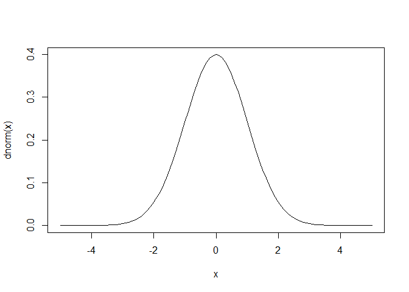
curve(dunif(x,0,10), xlim = c(0,10))
curve(dt(x,10),xlim = c(-1,1))
Distribuição Empírica
plot(density(rnorm(10)), ylim=c(0,0.4), xlim = c(-5,5))
curve(dnorm(x), add = TRUE, col = "red")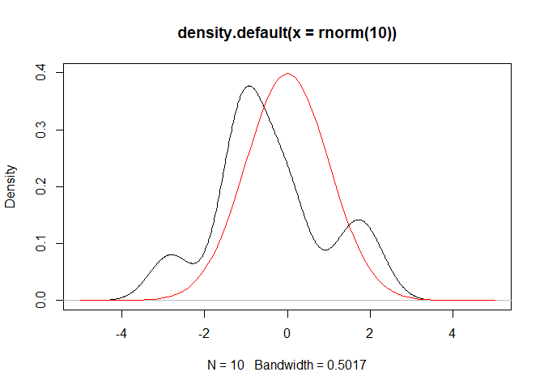
plot(density(rnorm(100)), ylim=c(0,0.4), xlim = c(-5,5))
curve(dnorm(x), add = TRUE, col = "red")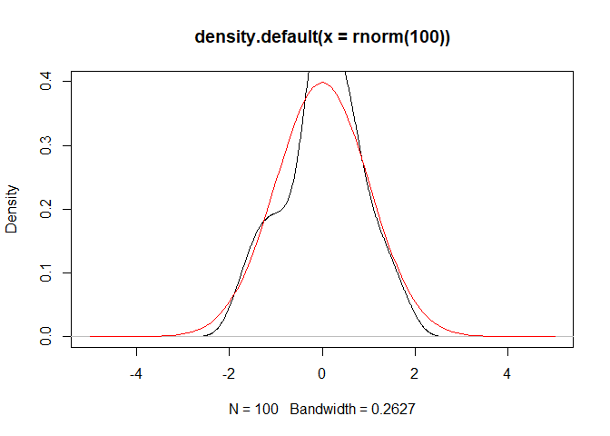
plot(density(rnorm(1000)), ylim=c(0,0.4), xlim = c(-5,5))
curve(dnorm(x), add = TRUE, col = "red")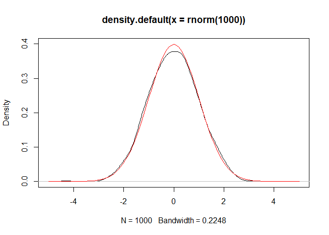
plot(density(rnorm(10000)), ylim=c(0,0.4), xlim = c(-5,5))
curve(dnorm(x), add = TRUE, col = "red")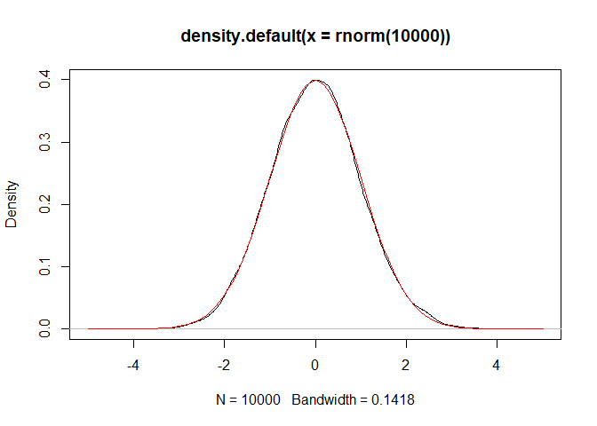
x = c(rnorm(500))
hist(x,
col = "steelblue",
freq = FALSE,
breaks = 40,
xlim = c(-3, 3),
ylim = c(0, 0.5),
xlab = paste("Histograma"),
main = "")
curve(dnorm(x), add = TRUE)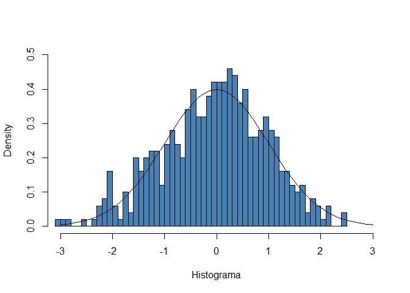
Função Distribuição Cumulativa
Distribuição Teórica
curve(pnorm(x), xlim = c(-5,5))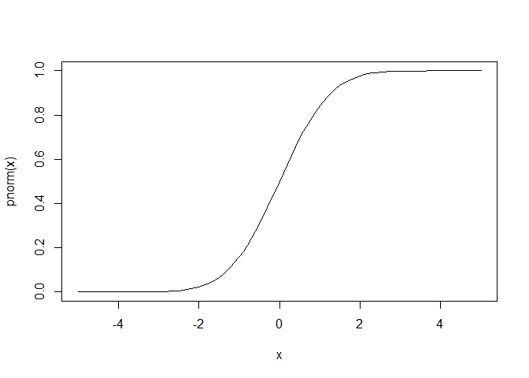
Dsitribuição Empírica
X = rnorm(100)
P = ecdf(X)pnorm(0)## [1] 0.5P(0) # This returns the empirical CDF at zero (should be close to 0.5)## [1] 0.55plot(P) # Draws a plot of the empirical CDF (see below)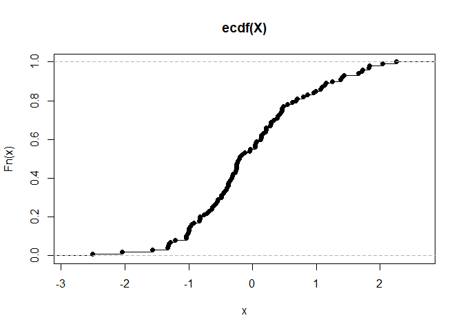
curve(pnorm(x), xlim = c(-5,5))
lines(P) # Draws a plot of the empirical CDF (see below)
X = rnorm(1000)
P = ecdf(X)P(0.0) # This returns the empirical CDF at zero (should be close to 0.5)## [1] 0.49curve(pnorm(x), xlim = c(-5,5))
lines(P) # Draws a plot of the empirical CDF (see below)
7- Teoria Assintótica
Convergência de séries não aleatórias
Exemplo de uma série não convergente \[f(N)=N^2\]
f = function(x) x^2
N = 1:30
plot(N, f(N), type="l", col="lightblue", lwd=4)
Série convergente
\[g(N)=10x^{-99/100}sin(x)+pi\]
g = function(x) 10*x^(-99/100) * sin(x) + pi
N = 1:100
plot(N, g(N), type="l", lwd=2)
e1 = 2
plot(N, g(N), type="l", lwd=2)
abline(h=pi+e1, lwd=2, col="darkred")
abline(h=pi-e1, lwd=2, col="darkred")
e2 = .5
plot(N, g(N), type="l", lwd=2)
abline(h=pi+e2, lwd=2, col="darkblue")
abline(h=pi-e2, lwd=2, col="darkblue")
e3 = .1
plot(N, g(N), type="l", lwd=2)
abline(h=pi+e3, lwd=2, col=rgb(.3,.6,1,.5))
abline(h=pi-e3, lwd=2, col=rgb(.3,.6,1,.5))
N = 100:200
plot(N, g(N), type="l", lwd=2)
e3 = .1
abline(h=pi+e3, lwd=2, col=rgb(.3,.6,1,.5))
abline(h=pi-e3, lwd=2, col=rgb(.3,.6,1,.5))
Convergência em Probabilidade e Lei Fraca dos Grandes Números
par(mfrow = c(2, 2))
#loop em n
for (nn in c(5, 10, 50, 100)) {
xbarra = replicate(n = 1000, expr = mean(runif(nn, 0, 5)))
hist(xbarra, col="blue", breaks = 20, xlim = c(0,5), main = paste("n=",nn))
}
par(mfrow = c(2, 2))
#loop em n
for (nn in c(50, 100, 500, 1000)) {
xbarra = replicate(n = 1000, expr = mean(runif(nn, 0, 5)))
hist(xbarra, col="blue", breaks = 20, xlim = c(0,5), main = paste("n=",nn))
}
m=100
mean_samples=function(n=10){
X=matrix(rnorm(n*m),nrow=m,ncol=n)
return(apply(X,1,mean))
}
B=matrix(NA,100,20)
for(i in 1:20){
B[,i]=mean_samples(i*10)
}
colnames(B)=as.character(seq(10,200,by=10))
boxplot(B)
u=seq(0,21,by=.2)
v=sqrt(u*10)
lines(u,1.96/v,col="red")
lines(u,-1.96/v,col="red")
Viés x consistência
set.seed(16)
par(mfrow = c(2, 2))
pop = 1000
for (i in c(20,100,1000,10000)){
fo = replicate(n = pop, expr = rnorm(i)[1])
plot(density(fo),
col = 'green',
lwd = 2,
ylim = c(0, 2),
xlab = 'estimates',
main = 'Estimador Não viesado e Não Consistente')
abline(v=0)
}
set.seed(16)
par(mfrow = c(2, 2))
pop = 100
for (i in c(20,100,1000,10000)){
fo = replicate(n = pop, expr = mean(rnorm(i)) - 0.99^i )
plot(density(fo),
col = 'green',
lwd = 2,
xlab = 'estimates',
xlim = c(-1,1),
main = 'Estimador Viesado e Consistente')
abline(v=0)
}
set.seed(16)
par(mfrow = c(2, 2))
pop = 1000
for (i in c(20,100,1000,10000)){
fo = replicate(n = pop, expr = mean(rnorm(i)))
plot(density(fo),
col = 'green',
lwd = 2,
xlab = 'estimates',
xlim = c(-1,1),
main = 'Estimador Não viesado e Consistente')
abline(v=0)
}
Consistência de MQO
f = function(n){
x1 = runif(n,1,10)
x2 = rnorm(n,10,20)
x3 = rgamma(n, shape = 0.5)
x4 = runif(n,10,60)
e = rnorm(n)
y = 10 + 5*x1 + 3*x2 + e
X = cbind(1,x1)
beta = solve(t(X)%*%X)%*%t(X)%*%y
beta
}f(10)## [,1]
## 39.270250
## x1 2.176305for (i in c(5,50,100,1000)){
x = replicate(n = 100, expr = f(i))
print(mean(x[2, 1, ]))
}## [1] 5.091528
## [1] 5.369723
## [1] 5.568808
## [1] 4.9153par(mfrow = c(2, 2))
for (i in c(5,50,100,1000)){
x = replicate(n = 100, expr = f(i))
plot(density( x[2, 1, ]), xlim = c(0,10))
abline(v=5)
}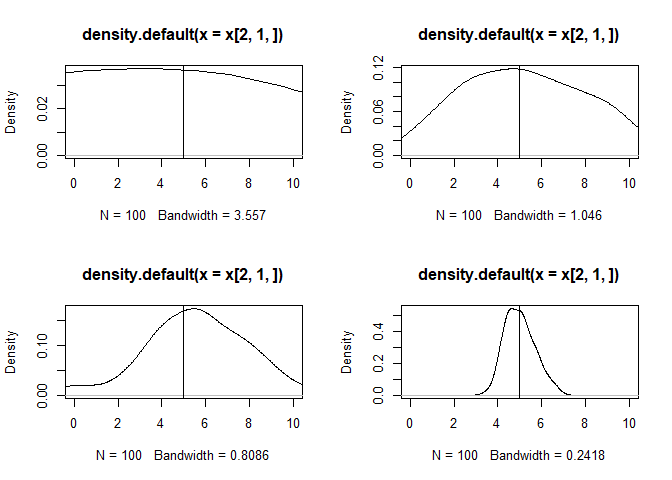
par(mfrow = c(2, 2))
for (i in c(1000,5000,10000,100000)){
x = replicate(n = 100, expr = f(i))
plot(density( x[2, 1, ]), xlim = c(0,10))
abline(v=5)
}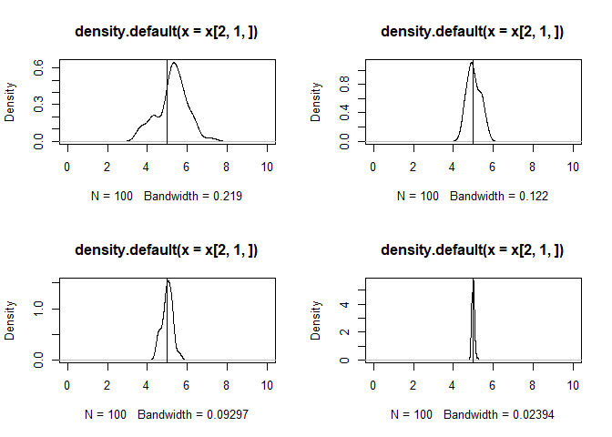
Teorema Central do Limite
reps <- 10000
sample.sizes <- c(5, 20, 75, 100)Distribuição Normal
par(mfrow = c(2, 2))
for (n in sample.sizes) {
samplemean <- rep(0, reps) #initialize the vector of sample menas
stdsamplemean <- rep(0, reps) #initialize the vector of standardized sample menas
# inner loop (loop over repetitions)
for (i in 1:reps) {
x <- rnorm(n)
samplemean[i] <- mean(x)
stdsamplemean[i] <- sqrt(n)*(mean(x))
}
# plot histogram and overlay the N(0,1) density in every iteration
hist(stdsamplemean,
col = "steelblue",
freq = FALSE,
breaks = 40,
xlim = c(-3, 3),
ylim = c(0, 0.8),
xlab = paste("n =", n),
main = "")
curve(dnorm(x),
lwd = 2,
col = "darkred",
add = TRUE)
}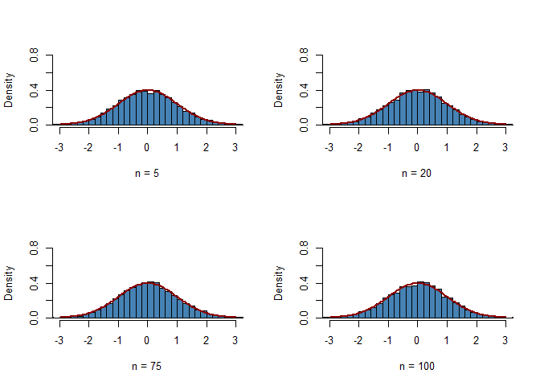
Distribuição Poison
par(mfrow = c(2, 2))
reps <- 10000
sample.sizes <- c(5, 20, 75, 100)
set.seed(123)
lambda = 1
for (n in sample.sizes) {
samplemean <- rep(0, reps) #initialize the vector of sample menas
stdsamplemean <- rep(0, reps) #initialize the vector of standardized sample menas
# inner loop (loop over repetitions)
for (i in 1:reps) {
x <- rpois(n, lambda)
samplemean[i] <- mean(x)
stdsamplemean[i] <- sqrt(n)*(mean(x) - lambda) / sqrt(lambda)
}
# plot histogram and overlay the N(0,1) density in every iteration
hist(stdsamplemean,
col = "steelblue",
freq = FALSE,
breaks = 40,
xlim = c(-3, 3),
ylim = c(0, 0.8),
xlab = paste("n =", n),
main = "")
curve(dnorm(x),
lwd = 2,
col = "darkred",
add = TRUE)
}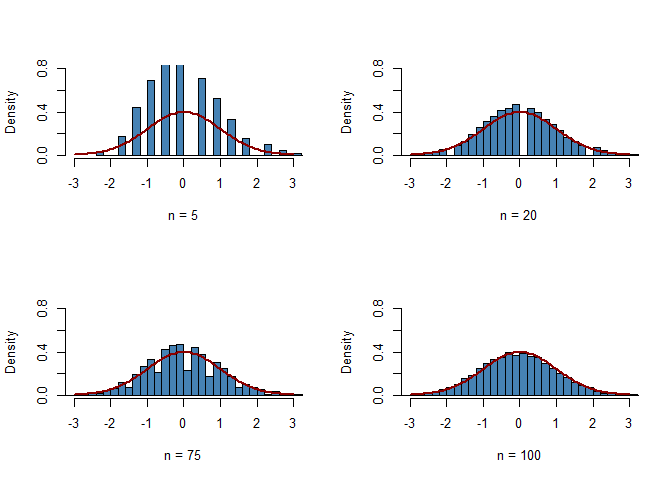
Distribuição Binomial
par(mfrow = c(2, 2))
reps <- 10000
sample.sizes <- c(5, 20, 75, 100)
set.seed(123)
for (n in sample.sizes) {
samplemean <- rep(0, reps) #initialize the vector of sample menas
stdsamplemean <- rep(0, reps) #initialize the vector of standardized sample menas
# inner loop (loop over repetitions)
for (i in 1:reps) {
x <- rbinom(n, 1, 0.5)
samplemean[i] <- mean(x)
stdsamplemean[i] <- sqrt(n)*(mean(x) - 0.5)/0.5
}
# plot histogram and overlay the N(0,1) density in every iteration
hist(stdsamplemean,
col = "steelblue",
freq = FALSE,
breaks = 40,
xlim = c(-3, 3),
ylim = c(0, 0.8),
xlab = paste("n =", n),
main = "")
curve(dnorm(x),
lwd = 2,
col = "darkred",
add = TRUE)
}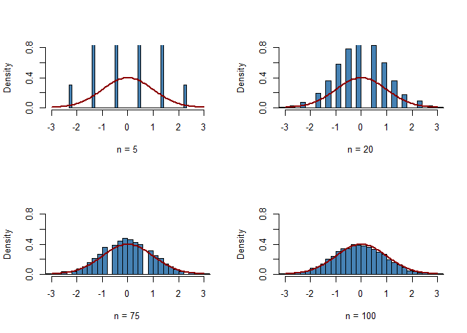
Distribuição Uniforme
par(mfrow = c(2, 2))
reps <- 10000
sample.sizes <- c(5, 20, 75, 100)
set.seed(123)
a = 0
b = 10
for (n in sample.sizes) {
samplemean <- rep(0, reps) #initialize the vector of sample menas
stdsamplemean <- rep(0, reps) #initialize the vector of standardized sample menas
# inner loop (loop over repetitions)
for (i in 1:reps) {
x <- runif(n, a, b)
samplemean[i] <- mean(x)
stdsamplemean[i] <- sqrt(n)*(mean(x) - ((b-a)/2))/((b-a)/sqrt(12))
}
# plot histogram and overlay the N(0,1) density in every iteration
hist(stdsamplemean,
col = "steelblue",
freq = FALSE,
breaks = 40,
xlim = c(-3, 3),
ylim = c(0, 0.8),
xlab = paste("n =", n),
main = "")
curve(dnorm(x),
lwd = 2,
col = "darkred",
add = TRUE)
}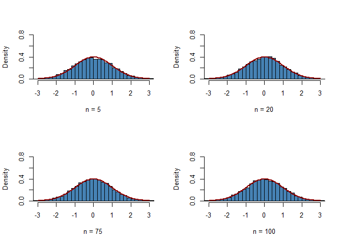
Normalidade Assintótica dos Estimadores de OLS
#install.packages("ggplot2")
library(ggplot2) ## Warning: package 'ggplot2' was built under R version 4.0.5Distribuição Normal
N = 10000
beta = 5
normal = function(n){
#x = rnorm(n)
#x = rexp(n = n, rate = 1)
x = rexp(n = n, rate = 0.5) + runif(n = n, min = -5, max = 50) + rpois(n = n, lambda = 0.5)
e_norm = rnorm(n)
X = cbind(1,x)
k = ncol(X)
y = 10 + beta * x + rnorm(n,20,30) + runif(n,0,100) + rexp(n) + e_norm
#y = 10 + beta * x + e_norm
B = solve(t(X)%*%X)%*%t(X)%*%y
B
}par(mfrow = c(2, 2))
for (i in c(5,50,100,1000)){
x = replicate(n = N, expr = normal(i))
z = sqrt(i) *( (x[2, 1, ] - beta))
#hist(x[2, 1, ], breaks = 30)
hist(z, breaks = 30)
#plot(density((z)))
}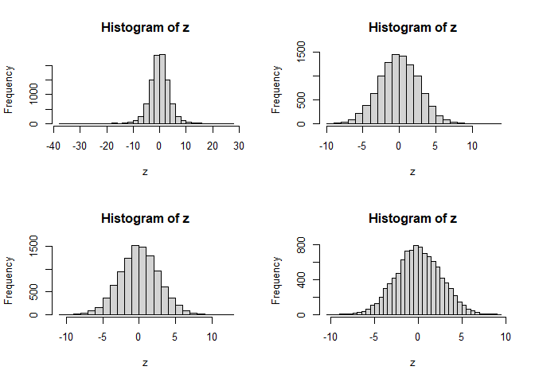
** Distribuição Uniforme**
N = 10000
beta = 5
unif = function(n){
# x = runif(n, min = 0, max = 100)
x = rexp(n = n, rate = 0.5) + runif(n = n, min = -5, max = 50) + rpois(n = n, lambda = 0.5)
e_unif = runif(n = n, min = -5, max = 5)
X = cbind(1,x)
y_unif = 10 + beta * x + rnorm(n,20,30) + runif(n,0,100) + rexp(n) + e_unif
#y_unif = 10 + beta * x + e_unif
B = solve(t(X)%*%X)%*%t(X)%*%y_unif
B
}par(mfrow = c(2, 2))
for (i in c(10,50,100,1000)){
x = replicate(n = N, expr = unif(i))
z = sqrt(i) *( (x[2, 1, ] - beta))
#hist(x[2, 1, ], breaks = 30)
hist(z, breaks = 30)
#plot(density((z)))
}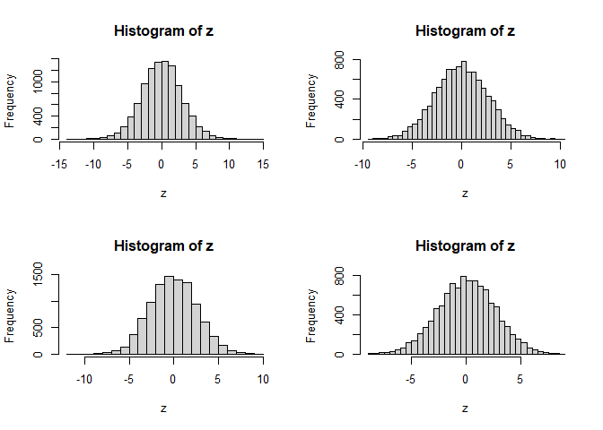
Distribuição Exponencial
pois = function(n){
# x = runif(n, min = 0, max = 100)
x = rexp(n = n, rate = 0.5) + runif(n = n, min = -5, max = 50) + rpois(n = n, lambda = 0.5)
e_pois = 100 * rpois(n = n, lambda = 1) + 25
X = cbind(1,x)
#y_pois = 10 + beta * x + rnorm(n,20,30) + runif(n,0,100) + rexp(n) + e_pois
y_pois = 10 + beta * x + e_pois
y = 10 + beta * x + rnorm(n,20,30) + runif(n,0,100) + rexp(n) + e_pois
B = solve(t(X)%*%X)%*%t(X)%*%y
B
}par(mfrow = c(2, 2))
for (i in c(5,50,100,1000)){
x = replicate(n = N, expr = pois(i))
z = sqrt(i) *( (x[2, 1, ] - beta))
#hist(x[2, 1, ], breaks = 30)
hist(z, breaks = 30)
#plot(density((z)))
}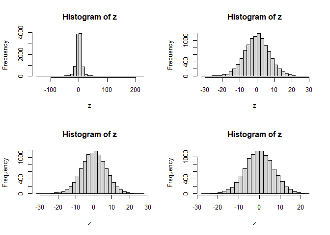
Distribuição “Bigamma”
rbigamma <- function(n, prob = c(0.5, 0.5)) {
# Draw n samples of T or F (our 'coin flip') with replacement
flips <- base::sample(x = c(T, F), size = n,
replace = T, prob = prob)
# Draw n samples from Gamma with shape=5 and scale=1 (mean=7)
# substract the mean (7) from the draws
gamma_7 <- rgamma(n = n, shape = 7, scale = 1)
# Draw n samples from Gamma with shape=1 and scale=1 (mean=1)
# substract the mean (1) from the draws
gamma_1 <- rgamma(n = n, shape = 1, scale = 1)
# Combine the flips and the two gammas' draws
bi_gamma <- flips * gamma_7 + (!flips) * gamma_1
# Demean the bimodal variables (weighting by 'prob')
bi_gamma <- bi_gamma - 7 * prob[1] - 1 * prob[2]
}bigamma = function(n){
# x = runif(n, min = 0, max = 100)
x = rexp(n = n, rate = 0.5) + runif(n = n, min = -5, max = 50) + rpois(n = n, lambda = 0.5)
e_bg = rbigamma(n = n)
X = cbind(1,x)
y_bg = 10 + beta * x + rnorm(n,20,30) + runif(n,0,100) + rexp(n) + e_bg
B = solve(t(X)%*%X)%*%t(X)%*%y_bg
B
}par(mfrow = c(2, 2))
for (i in c(5,50,100,1000)){
x = replicate(n = N, expr = bigamma(i))
z = sqrt(i) *( (x[2, 1, ] - beta))
#hist(x[2, 1, ], breaks = 30)
hist(z, breaks = 30)
#plot(density((z)))
}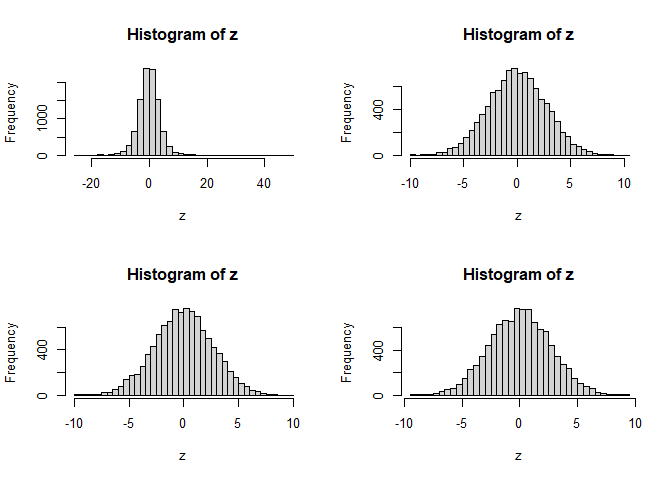
Distribuição Exponencial
expo = function(n){
#x = rexp(n = n, rate = 1)
x = rexp(n = n, rate = 0.5) + runif(n = n, min = -5, max = 50) + rpois(n = n, lambda = 0.5)
e_exp = rexp(n = n, rate = 1)
X = cbind(1,x)
#y_exp = 10 + beta * x + e_exp
y = 10 + beta * x + rnorm(n,20,30) + runif(n,0,100) + rexp(n) + e_exp
B = solve(t(X)%*%X)%*%t(X)%*%y
B
}par(mfrow = c(2, 2))
for (i in c(5,50,100,1000)){
x = replicate(n = N, expr = expo(i))
z = sqrt(i) *( (x[2, 1, ] - beta))
hist(z, breaks = 30)
#plot(density((z)))
}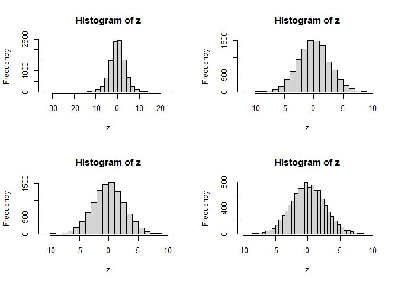
Inferência estatística
5- Um pouco de Inferência
Primeiro passo é criar um banco de dados hipotético
set.seed(1)
n = 500
x1 = rnorm(n, mean = 500, sd = 50)
x2 = rpois(n, lambda = 5)
e = rnorm(n)
beta = c(3.5,5)
y = 10 + beta[1]*x1 + beta[2]*x2 + e
X = cbind(1,x1,x2) ols = lm(y~ x1 + x2)
summary(ols)##
## Call:
## lm(formula = y ~ x1 + x2)
##
## Residuals:
## Min 1Q Median 3Q Max
## -3.15798 -0.71935 0.00887 0.70818 3.11361
##
## Coefficients:
## Estimate Std. Error t value Pr(>|t|)
## (Intercept) 9.6940067 0.4721931 20.53 <2e-16 ***
## x1 3.5002971 0.0009249 3784.62 <2e-16 ***
## x2 5.0274460 0.0212557 236.52 <2e-16 ***
## ---
## Signif. codes: 0 '***' 0.001 '**' 0.01 '*' 0.05 '.' 0.1 ' ' 1
##
## Residual standard error: 1.044 on 497 degrees of freedom
## Multiple R-squared: 1, Adjusted R-squared: 1
## F-statistic: 7.25e+06 on 2 and 497 DF, p-value: < 2.2e-16confint(ols,level = 0.95)## 2.5 % 97.5 %
## (Intercept) 8.766266 10.621748
## x1 3.498480 3.502114
## x2 4.985684 5.069208B = solve(t(X)%*%X)%*%(t(X)%*%y)
B## [,1]
## 9.694007
## x1 3.500297
## x2 5.027446Calcular a estatística \(T\): \[t_n(\theta) = \frac{\hat \theta - \theta}{s(\hat \theta)}\]
Considerar \(\theta = 0\)
É preciso calcular \(s(\hat\theta)\)
#y_hat = X%*%B
e_hat = y - X%*%B
k = ncol(X)
sigma_hat = (1/(n-k)) * t(e_hat)%*%e_hat # n-k correção de viés
sigma_hat## [,1]
## [1,] 1.090167V = sigma_hat[1,1] * solve(t(X)%*%X)
ep = sqrt(diag(V))
ep## x1 x2
## 0.472193136 0.000924874 0.021255675t = B / ep
t## [,1]
## 20.52975
## x1 3784.62042
## x2 236.52253Definir c para nível de significância de \(5\%\)
1 - (0.05/2)## [1] 0.975c = qt(.975,n-k)
c## [1] 1.964749Assumindo que \(\beta \sim t_{n-k}\)
2 * (1 - pt(t[1,1], df = n-k))##
## 0Comparando com o verdadeiro valor de Beta
t = B[2,1] - beta[1] / ep[2]
t## x1
## -3780.799P-valor
Assumindo que \(\beta \sim t_{n-k}\)
2 * (1 - pt(t, df = n-k))## x1
## 2Intervalos de Confiança
\[C_n = [\hat \theta - c .s(\hat \theta), \hat\theta + c. s(\hat\theta)]\]
Definir c para nível de significância de \(5\%\)
c = qt(.975,n-k)
c## [1] 1.964749Intervalo de Confiança de \(\beta_0\)
lower = B[1,1] - c* ep[1]
upper = B[1,1] + c * ep[1]
print(lower);print(upper)##
## 8.766266##
## 10.62175Intervalo de Confiança de \(\beta_1\)
lower = B[2,1] - c* ep[2]
upper = B[2,1] + c * ep[2]
print(lower);print(upper)## x1
## 3.49848## x1
## 3.502114Intervalo de Confiança de \(\beta_2\)
lower = B[3,1] - c* ep[3]
upper = B[3,1] + c * ep[3]
print(lower);print(upper)## x2
## 4.985684## x2
## 5.069208Definir c para nível de significância de \(1\%\)
c = qt(.995,n-k)
c## [1] 2.585758Intervalo de Confiança de \(\beta_0\)
lower = B[1,1] - c* ep[1]
upper = B[1,1] + c * ep[1]
print(lower);print(upper)##
## 8.47303##
## 10.91498Intervalo de Confiança de \(\beta_1\)
lower = B[2,1] - c* ep[2]
upper = B[2,1] + c * ep[2]
print(lower);print(upper)## x1
## 3.497906## x1
## 3.502689Intervalo de Confiança de \(\beta_2\)
lower = B[3,1] - c* ep[3]
upper = B[3,1] + c * ep[3]
print(lower);print(upper)## x2
## 4.972484## x2
## 5.082408Simulações
Para executar esta lista de exercícios é importante enteder como funciona a estrutura para a realização de looping dentro do R
Uma das formas de utilizar looping é com o uso do for
for (i in 1:5){
print(i)
}## [1] 1
## [1] 2
## [1] 3
## [1] 4
## [1] 5for (i in c(1,5,3,8)){
print(i)
}## [1] 1
## [1] 5
## [1] 3
## [1] 8v = c(1,4,5,10)
for (n in 1:length(v)){
print(v[n])
}## [1] 1
## [1] 4
## [1] 5
## [1] 10Criar
A = matrix(rep(NA, 25), nrow = 5 )
for (j in 1:dim(A)[2]){
A[,j] = rnorm(5)
}
A## [,1] [,2] [,3] [,4] [,5]
## [1,] 0.06526642 -0.50313004 -0.4265299 -0.005667893 0.9938664
## [2,] 1.03532642 0.60745556 -0.9264042 0.633448919 0.6968459
## [3,] 2.26021579 -0.01004142 -0.9285579 -0.509180774 1.6999707
## [4,] 1.31469628 0.27533030 -0.7189006 -0.857008619 -0.9777419
## [5,] -0.87002335 -1.31229878 -0.4147906 1.616167577 2.0488176A = matrix(rep(NA, 25), nrow = 5 )
for (i in 1:dim(A)[1]){
for (j in 1:dim(A)[2]){
A[i,j] = rnorm(1)
}
}
A## [,1] [,2] [,3] [,4] [,5]
## [1,] 1.2264493 0.30702301 0.6243330 0.06134144 -0.1108258
## [2,] -1.5762336 0.74258985 2.1423234 2.08977296 0.1697943
## [3,] -0.1078778 0.18199449 1.1459282 1.47729882 0.4079442
## [4,] 1.1142787 -0.02707584 0.4977222 1.18564001 3.6395736
## [5,] -0.0540026 -0.66814732 0.4458080 -0.40582525 0.6352831v = c()
for (i in 1:10){
v[i] = mean(rnorm(5))
}
v## [1] 0.21192739 -0.34655883 0.24775529 0.08784537 -0.13465661 -0.59670709
## [7] -0.52832124 -0.02325222 -0.13099934 -0.36546438#{r} v = c() for (n in c(5,10,50,100,1000)){ for (i in 1:5){ v[i] = mean(rnorm(n)) } } v #
Comando replicate
set.seed(1)
x = replicate(n = 10, expr = rnorm(1))
x1 =c()
set.seed(1)
for (i in 1:10){
x1[i] = rnorm(1)
}
x == x1## [1] TRUE TRUE TRUE TRUE TRUE TRUE TRUE TRUE TRUE TRUEGráficos
Histograma
x = c(rnorm(500))
hist(x,
col = "steelblue",
freq = FALSE,
breaks = 40,
xlim = c(-3, 3),
ylim = c(0, 0.5),
xlab = paste("Histograma"),
main = "Teste")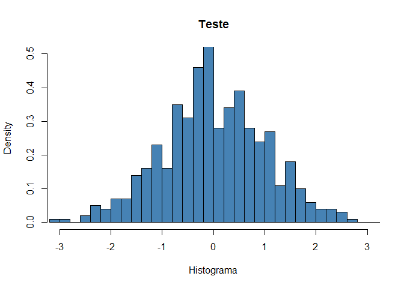
curve(dnorm(x), xlim = c(-1,1))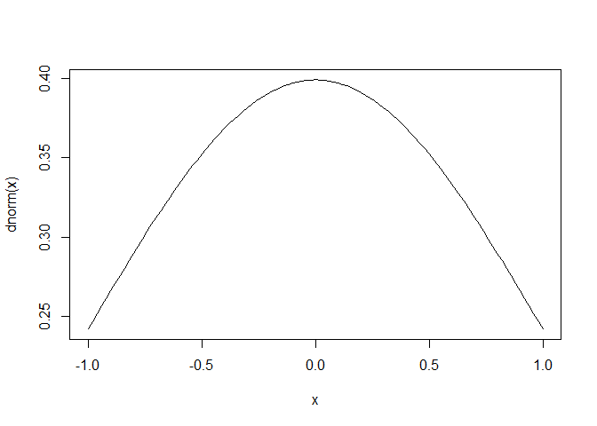
curve(dunif(x,0,10), xlim = c(0,10))
curve(dt(x,10),xlim = c(-1,1))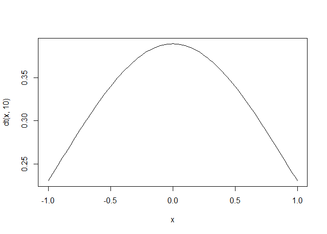
curve(pnorm(x),
xlim = c(-3.5, 3.5),
ylab = "Density",
main = "Standard Normal Cumulative Distribution Function")
x = rnorm(5000)
plot(density(x))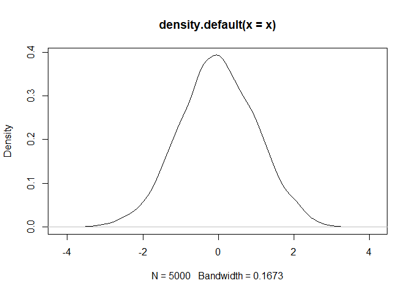
x = c(rnorm(500))
hist(x,
col = "steelblue",
freq = FALSE,
breaks = 40,
xlim = c(-3, 3),
ylim = c(0, 0.5),
xlab = paste("Histograma"),
main = "")
curve(dnorm(x), add = TRUE)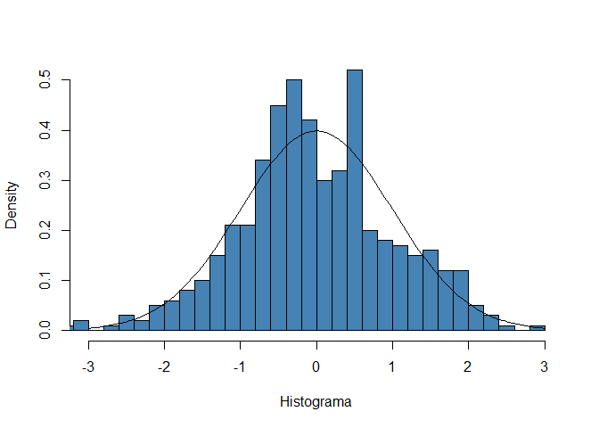
x = rnorm(500)
plot(density(x), ylim = c(0,0.5), xlim = c(-4,4))
curve(dnorm(x), col = "red", add = TRUE)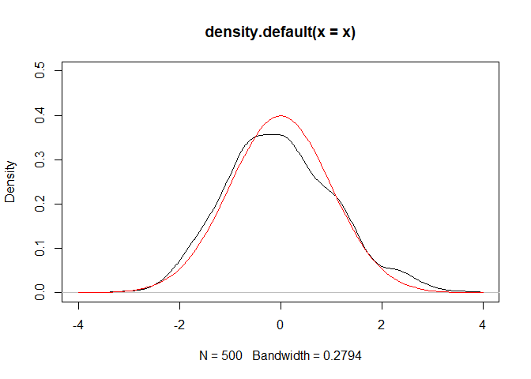
Lei dos Grandes Números
par(mfrow = c(2, 2))
set.seed(1)
X_bar <- vector()
#loop em n
for (n in c(5, 10, 50, 100)) {
#loop para o monte carlo
for (iaux in 1:1000) {
X_bar[iaux] = mean(runif(n, 0, 5))
}
#faço o histograma
hist(X_bar, col="blue", breaks = 20, xlim = c(0,5), main = paste("n=",n))
}
par(mfrow = c(2, 2))
set.seed(1)
#loop em n
for (n in c(5, 10, 50, 100)) {
#loop para o monte carlo
X_bar = replicate(1000, mean(runif(n,0,5)))
#faço o histograma
hist(X_bar, col="blue", breaks = 20, xlim = c(0,5), main = paste("n=",n))
}
Teorema Central do Limite
par(mfrow = c(2, 2))
reps <- 10000
sample.sizes <- c(5, 20, 75, 100)
set.seed(123)
for (n in sample.sizes) {
samplemean <- rep(0, reps) #initialize the vector of sample menas
stdsamplemean <- rep(0, reps) #initialize the vector of standardized sample menas
# inner loop (loop over repetitions)
for (i in 1:reps) {
x <- rbinom(n, 1, 0.5)
samplemean[i] <- mean(x)
stdsamplemean[i] <- sqrt(n)*(mean(x) - 0.5)/0.5
}
# plot histogram and overlay the N(0,1) density in every iteration
hist(stdsamplemean,
col = "steelblue",
freq = FALSE,
breaks = 40,
xlim = c(-3, 3),
ylim = c(0, 0.8),
xlab = paste("n =", n),
main = "")
curve(dnorm(x),
lwd = 2,
col = "darkred",
add = TRUE)
}
Viés x consistência
set.seed(16)
par(mfrow = c(2, 2))
pop = 1000
for (i in c(20,100,1000,10000)){
fo = replicate(n = pop, expr = rnorm(i)[1])
plot(density(fo),
col = 'green',
lwd = 2,
ylim = c(0, 2),
xlab = 'estimates',
main = 'Estimador Não viesado e Não Consistente')
abline(v=0)
}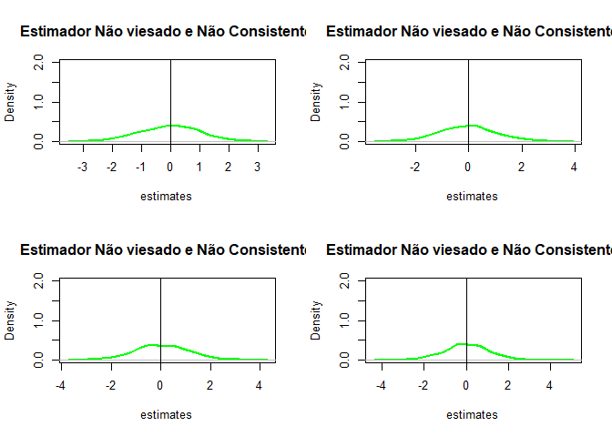
set.seed(16)
par(mfrow = c(2, 2))
pop = 100
for (i in c(20,100,1000,10000)){
fo = replicate(n = pop, expr = mean(rnorm(i)) - 0.99^i )
plot(density(fo),
col = 'green',
lwd = 2,
xlab = 'estimates',
xlim = c(-1,1),
main = 'Estimador Viesado e Consistente')
abline(v=0)
}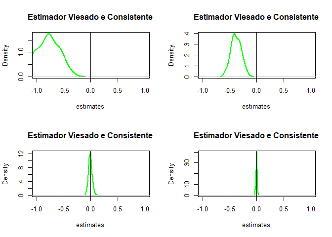
set.seed(16)
par(mfrow = c(2, 2))
pop = 1000
for (i in c(20,100,1000,10000)){
fo = replicate(n = pop, expr = mean(rnorm(i)))
plot(density(fo),
col = 'green',
lwd = 2,
xlab = 'estimates',
xlim = c(-1,1),
main = 'Estimador Não viesado e Consistente')
abline(v=0)
}
Verificação de consistência no modelo linear estimado por OLS
\[\mathbb{E}(xe) = \mathbb{E}(x)\mathbb{E}(e) + Cov(x,e)\]
Modelo não consistente
set.seed(1)
n = 1000
x1 = rnorm(n, 200, 20)
x2 = runif(n, 0,20)
e = rnorm(n) + 0.7* x1
X = cbind(1,x1,x2)
beta = c(3,7,2)
y = X%*%beta + eB = solve(t(X)%*%X)%*%(t(X)%*%y)
B## [,1]
## 2.771486
## x1 7.700914
## x2 2.003643e_hat = y - X%*%B
k = ncol(X)
sigma_hat = (1/(n-k)) * t(e_hat)%*%e_hat # n-k correção de viés
sigma_hat## [,1]
## [1,] 1.111484V = sigma_hat[1,1] * solve(t(X)%*%X)
ep = sqrt(diag(V))
ep## x1 x2
## 0.326740307 0.001612503 0.005730891t = (B-beta) / ep
t## [,1]
## -0.6993735
## x1 434.6745806
## x2 0.6356392c = qt(.975,n-k)
c## [1] 1.962346lower = B[1,1] - c * ep[1]
upper = B[1,1] + c * ep[1]
print(lower);print(upper)##
## 2.130309##
## 3.412664lower = B[2,1] - c * ep[2]
upper = B[2,1] + c * ep[2]
print(lower);print(upper)## x1
## 7.69775## x1
## 7.704078lower = B[3,1] - c * ep[3]
upper = B[3,1] + c * ep[3]
print(lower);print(upper)## x2
## 1.992397## x2
## 2.014889p0 = 2 * pt(-abs(t[1,1]), df = n-k)
p0##
## 0.4844818p1 = 2 * pt(-t[2,1], df = n-k)
p1## x1
## 0p2 = 2 * pt(-t[3,1], df = n-k)
p2## x2
## 0.5251575Modelo consistente
set.seed(1)
n = 1000
x1 = rnorm(n, 200, 20)
x2 = runif(n, 0,20)
e = rnorm(n) * x1
X = cbind(1,x1,x2)
beta = c(3,7,2)
y = X%*%beta + eB = solve(t(X)%*%X)%*%(t(X)%*%y)
B## [,1]
## -39.393089
## x1 7.168769
## x2 2.719188e_hat = y - X%*%B
k = ncol(X)
sigma_hat = (1/(n-k)) * t(e_hat)%*%e_hat # n-k correção de viés
sigma_hat## [,1]
## [1,] 44840.47V = sigma_hat[1,1] * solve(t(X)%*%X)
ep = sqrt(diag(V))
ep## x1 x2
## 65.62755 0.32388 1.15108t = (B-beta) / ep
t## [,1]
## -0.6459648
## x1 0.5210845
## x2 0.6247940c = qt(.975,n-k)
c## [1] 1.962346lower = B[1,1] - c * ep[1]
upper = B[1,1] + c * ep[1]
print(lower);print(upper)##
## -168.1771##
## 89.3909lower = B[2,1] - c * ep[2]
upper = B[2,1] + c * ep[2]
print(lower);print(upper)## x1
## 6.533204## x1
## 7.804333lower = B[3,1] - c * ep[3]
upper = B[3,1] + c * ep[3]
print(lower);print(upper)## x2
## 0.4603697## x2
## 4.978006p0 = 2 * pt(-abs(t[1,1]), df = n-k)
p0##
## 0.5184508p1 = 2 * pt(-t[2,1], df = n-k)
p1## x1
## 0.6024236p2 = 2 * pt(-t[3,1], df = n-k)
p2## x2
## 0.53224936 - Variáveis Instrumentais
Motivação para usar Variáveis Instrumentais: \(\mathbb{E}(xe) \neq 0\)
Matriz de Variância e Covariância
#install.packages("mvtnorm")
library(mvtnorm)## Warning: package 'mvtnorm' was built under R version 4.0.3 sigma = matrix(c(4,3,3,30), ncol=2)
colnames(sigma) = c("x1","x2")
rownames(sigma) = c("x1","x2")
sigma## x1 x2
## x1 4 3
## x2 3 30Normal Bivariada
n = 1000
mv = rmvnorm(n, mean=c(10,0), sigma=sigma)
dim(mv)## [1] 1000 2x1 = mv[,1]
x2 = mv[,2]
var(x1)## [1] 4.136468mean(x1)## [1] 10.0635var(x2)## [1] 31.6596mean(x2)## [1] -0.04180347cov(x1,x2)## [1] 3.195622Endogeneidade
\(E(x_2u) \neq 0\)
Lembre que: \(E(x_2u) = E(x_2)E(u) + Cov(X_2,u)\), e, como \(E(u) = 0\), então \(E(x_2u) = Cov(x_2,u)\)
n = 1000
x1 = rnorm(n)
sigma = matrix(c(4,3,3,30), ncol=2)
mv = rmvnorm(n, mean=c(10,0), sigma=sigma)
x2 = mv[,1]
u = mv[,2]
X = cbind(1,x1,x2)
beta = c(2,5,0.5)
y = X%*%beta + u
cov(x2,u)## [1] 3.965281Endogeneidade gera inconsistência no estimador de OLS
Se $Cov(x_2,u) > 0 $, então o estimador é enviesado para cima:
iv = function(n){
x1 = rnorm(n)
sigma = matrix(c(4,3,3,30), ncol=2)
mv = rmvnorm(n, mean=c(10,0), sigma=sigma)
x2 = mv[,1]
u = mv[,2]
X = cbind(1,x1,x2)
beta = c(2,5,0.5)
y = X%*%beta + u
B = solve(t(X)%*%X)%*%t(X)%*%y
B
}
z = replicate(10000, expr = iv(1000))
plot(density(z[3, 1, ]), xlim = c(0,2))
abline(v = 0.5)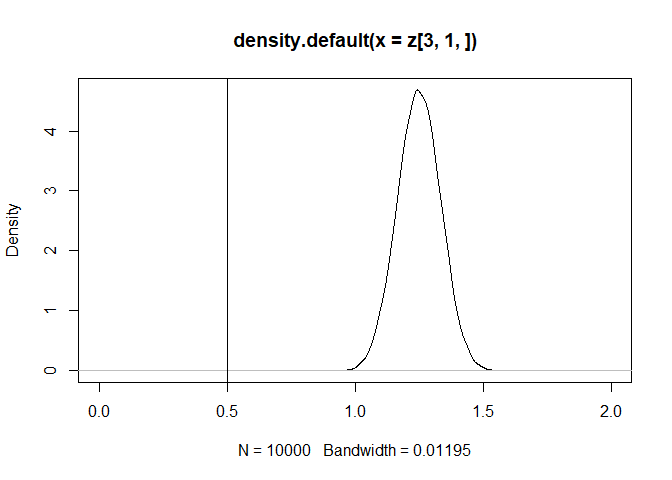
Se $Cov(x_2,u) < 0 $, então o estimador é enviesado para baixo:
iv = function(n){
x1 = rnorm(n)
sigma = matrix(c(4,-3,-3,30), ncol=2)
mv = rmvnorm(n, mean=c(10,0), sigma=sigma)
x2 = mv[,1]
u = mv[,2]
X = cbind(1,x1,x2)
beta = c(2,5,0.5)
y = X%*%beta + u
B = solve(t(X)%*%X)%*%t(X)%*%y
B
}
z = replicate(10000, expr = iv(1000))
plot(density(z[3, 1, ]), xlim = c(-1,1))
abline(v = 0.5)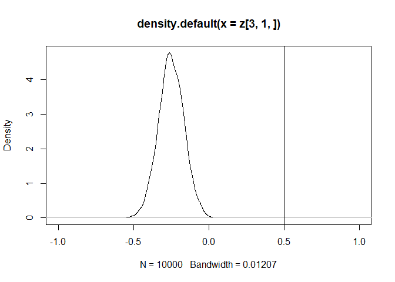
Se \(Cor(x_1,x_2) = 0\), então apenas a estimativa de \(\beta_2\) é enviesada.
iv = function(n){
x1 = rnorm(n)
sigma = matrix(c(4,-3,-3,30), ncol=2)
mv = rmvnorm(n, mean=c(10,0), sigma=sigma)
x2 = mv[,1]
u = mv[,2]
X = cbind(1,x1,x2)
beta = c(2,5,0.5)
y = X%*%beta + u
B = solve(t(X)%*%X)%*%t(X)%*%y
B
}
z = replicate(10000, expr = iv(1000))
par(mfrow = c(1, 2))
plot(density(z[2, 1, ]), xlim = c(4.5,5.5))
abline(v = 5)
plot(density(z[3, 1, ]), xlim = c(-0.5,1))
abline(v = 0.5)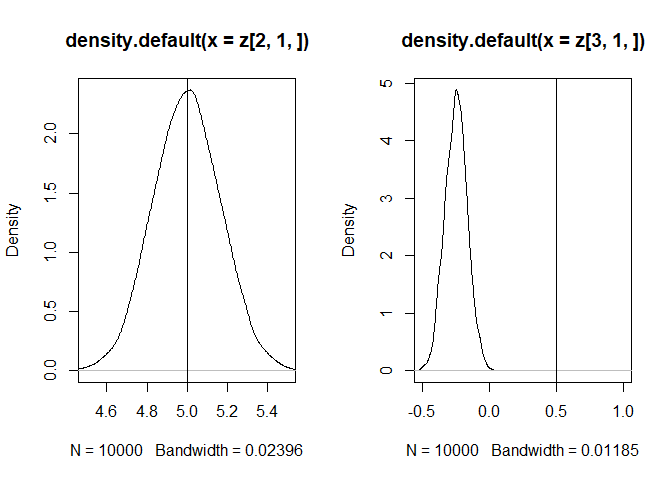
Se \(Cor(x_1,x_2) \neq 0\), então as estimativas de \(\beta_1\) e \(\beta_2\) são enviesadas.
iv = function(n){
sigma = matrix(c(4,-3,2,-3,5,0,2,0,7), ncol=3)
mv = rmvnorm(n, mean=c(10,0,3), sigma=sigma)
x2 = mv[,1]
u = mv[,2]
x1 = mv[,3]
X = cbind(1,x1,x2)
beta = c(2,5,0.5)
y = X%*%beta + u
B = solve(t(X)%*%X)%*%t(X)%*%y
B
}
z = replicate(10000, expr = iv(1000))
par(mfrow = c(1, 2))
plot(density(z[2, 1, ]), xlim = c(4.5,6))
abline(v = 5)
plot(density(z[3, 1, ]), xlim = c(-0.5,1))
abline(v = 0.5)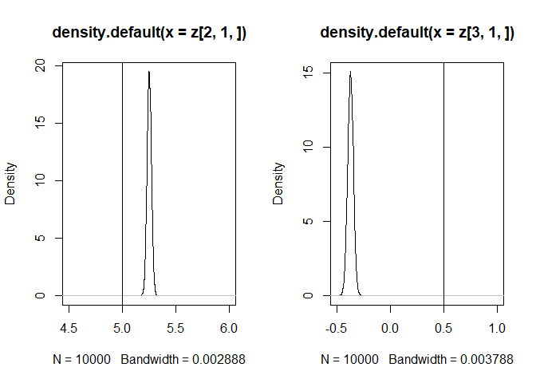
Estimador de Variáveis Instrumentais
\(\beta{iv} = (Z'X)^{-1}Z'y\)
sigma = matrix(c(4,-3,2,-3,5,0,2,0,7), ncol=3)
colnames(sigma) = c("x2","u","z1")
rownames(sigma) = c("x2","u","z1")
sigma## x2 u z1
## x2 4 -3 2
## u -3 5 0
## z1 2 0 7iv = function(n){
x1 = rnorm(n)
sigma = matrix(c(4,-3,2,-3,5,0,2,0,7), ncol=3)
mv = rmvnorm(n, mean=c(10,0,3), sigma=sigma)
x2 = mv[,1]
u = mv[,2]
z1 = mv[,3]
X = cbind(1,x1,x2)
Z = cbind(1,x1,z1)
beta = c(2,5,0.5)
y = X%*%beta + u
Biv = solve(t(Z)%*%X)%*%t(Z)%*%y
Biv
}
z = replicate(10000, expr = iv(1000))
plot(density(z[3, 1, ]), xlim = c(0,1))
abline(v = 0.5)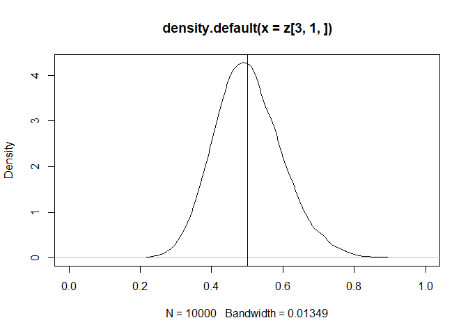
\(Cov(x_1,x_2) \ne 0\)
iv = function(n){
sigma = matrix(c(5,-3,0,0,-3,10,2,-5,0,2,4,0,0,-5,0,10), ncol=4)
mv = rmvnorm(n, mean=c(10,2,3,0), sigma=sigma)
x1 = mv[,1]
x2 = mv[,2]
u = mv[,4]
z1 = mv[,3]
X = cbind(1,x1,x2)
Z = cbind(1,x1,z1)
beta = c(2,5,0.5)
y = X%*%beta + u
Biv = solve(t(Z)%*%X)%*%t(Z)%*%y
Biv
}
z = replicate(10000, expr = iv(1000))
par(mfrow = c(1, 2))
plot(density(z[2, 1, ]), xlim = c(4.5,5.5))
abline(v = 5)
plot(density(z[3, 1, ]), xlim = c(-0.5,1))
abline(v = 0.5)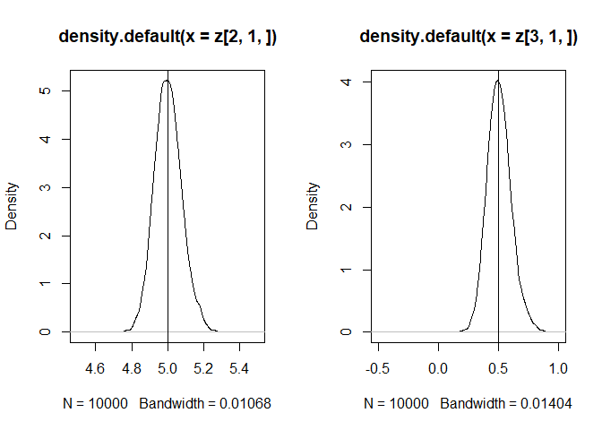
Estimador de Mínimos Quadrados em Dois Estágios - @SLS
Utilizando apenas um instrumento
\(\hat \beta_{2sls} = (X'Z(Z'Z)^{-1}Z'X)^{-1}X'Z(Z'Z)^{-1}Z'y\)
set.seed(1)
x1 = rnorm(n)
sigma = matrix(c(4,-3,2,-3,5,0,2,0,7), ncol=3)
mv = rmvnorm(n, mean=c(10,0,3), sigma=sigma)
x2 = mv[,1]
u = mv[,2]
z1 = mv[,3]
X = cbind(1,x1,x2)
Z = cbind(1,x1,z1)
beta = c(2,5,0.5)
y = X%*%beta + u
Biv = solve(t(Z)%*%X)%*%t(Z)%*%y
Biv## [,1]
## 1.1023513
## x1 4.9974349
## x2 0.5842413B2sls = solve(t(X)%*%Z%*%solve(t(Z)%*%Z)%*%t(Z)%*%X)%*%t(X)%*%Z%*%solve(t(Z)%*%Z)%*%t(Z)%*%y
B2sls## [,1]
## 1.1023513
## x1 4.9974349
## x2 0.5842413Por que o nome de dois estágios? Pois é possível obter as mesmas estimativas realizando um procedimento em dois estágios conforme pode ser observado abaixo.
Estimar: \(x_2 = \hat\beta_0 + \hat\beta_1 X_1 + \gamma Z_1 + e\)
set.seed(1)
n = 1000
x1 = rnorm(n)
sigma = matrix(c(4,-3,2,-3,5,0,2,0,7), ncol=3)
mv = rmvnorm(n, mean=c(10,0,3), sigma=sigma)
x2 = mv[,1]
u = mv[,2]
z1 = mv[,3]
X = cbind(1,x1,x2)
Z = cbind(1,x1,z1)
beta = c(2,5,0.5)
y = X%*%beta + u
B1 = solve(t(Z)%*%Z)%*%t(Z)%*%x2
x_hat = Z%*%B1Antes de estimar o 2º estágio, repare que o 1º estágio “limpou” a endogeneidade que existia em \(x2\).
cor(x_hat,u)## [,1]
## [1,] 0.0286093res =x2 - x_hat
cor(res,u)## [,1]
## [1,] -0.71484472º estágio: \(y = \beta_0 + \beta_1 X_1 + \beta_2 \hat{X_2} + u\)
X_hat = cbind(1,x1,x_hat)
B2sls = solve(t(X_hat)%*%X_hat)%*%t(X_hat)%*%y
B2sls## [,1]
## 1.1023513
## x1 4.9974349
## 0.5842413Comparar os resultados obtidos pelo estimador IV com o estimador 2SLS:
B2sls = solve(t(X)%*%Z%*%solve(t(Z)%*%Z)%*%t(Z)%*%X)%*%t(X)%*%Z%*%solve(t(Z)%*%Z)%*%t(Z)%*%y
B2sls## [,1]
## 1.1023513
## x1 4.9974349
## x2 0.5842413Dois Instrumentos
sigma = matrix(c(5,-2,5,3,-2,10,0,0,5,0,8,0,3,0,0,10), ncol=4)
colnames(sigma) = c("x2","z1","z2","u")
rownames(sigma) = c("x2","z1","z2","u")
sigma## x2 z1 z2 u
## x2 5 -2 5 3
## z1 -2 10 0 0
## z2 5 0 8 0
## u 3 0 0 10set.seed(1)
x1 = rnorm(n)
sigma = matrix(c(5,-2,5,3,-2,10,0,0,5,0,8,0,3,0,0,10), ncol=4)
mv = rmvnorm(n, mean=c(10,5,3,0), sigma=sigma)
x2 = mv[,1]
z1 = mv[,2]
z2 = mv[,3]
u = mv[,4]
X = cbind(1,x1,x2)
Z = cbind(1,x1,z1,z2)
beta = c(2,5,0.5)
y = X%*%beta + u
B2sls = solve(t(X)%*%Z%*%solve(t(Z)%*%Z)%*%t(Z)%*%X)%*%t(X)%*%Z%*%solve(t(Z)%*%Z)%*%t(Z)%*%y
B2sls## [,1]
## 2.0407802
## x1 5.0159400
## x2 0.4980277Usar dois instrumentos aumenta a eficiência, conforme veremos abaixo. Mas usando um ou dois instrumentos o estimador é consistente:
sls2 = function(n){
x1 = rnorm(n)
sigma = matrix(c(5,-2,5,3,-2,10,0,0,5,0,8,0,3,0,0,10), ncol=4)
mv = rmvnorm(n, mean=c(10,5,3,0), sigma=sigma)
x2 = mv[,1]
z1 = mv[,2]
z2 = mv[,3]
u = mv[,4]
X = cbind(1,x1,x2)
Z = cbind(1,x1,z1,z2)
beta = c(2,5,0.5)
y = X%*%beta + u
B2sls2 = solve(t(X)%*%Z%*%solve(t(Z)%*%Z)%*%t(Z)%*%X)%*%t(X)%*%Z%*%solve(t(Z)%*%Z)%*%t(Z)%*%y
B2sls2
}sls = function(n){
x1 = rnorm(n)
sigma = matrix(c(5,-2,5,3,-2,10,0,0,5,0,8,0,3,0,0,10), ncol=4)
mv = rmvnorm(n, mean=c(10,5,3,0), sigma=sigma)
x2 = mv[,1]
z1 = mv[,2]
z2 = mv[,3]
u = mv[,4]
X = cbind(1,x1,x2)
Z = cbind(1,x1,z1)
beta = c(2,5,0.5)
y = X%*%beta + u
B2sls2 = solve(t(X)%*%Z%*%solve(t(Z)%*%Z)%*%t(Z)%*%X)%*%t(X)%*%Z%*%solve(t(Z)%*%Z)%*%t(Z)%*%y
B2sls2
}set.seed(10)
z = replicate(10000, expr = sls2(1000))
set.seed(10)
z1 = replicate(10000, expr = sls(1000))
par(mfrow = c(1, 2))
plot(density(z[3, 1, ]), xlim = c(0,1))
abline(v = 0.5)
plot(density(z1[3, 1, ]), xlim = c(0,1))
abline(v = 0.5)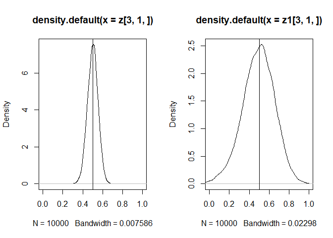
Matriz de Variânicia-Covariância de Variáveis Instrumentais
Estimador de Varáveis Instrumentais
set.seed(1)
n = 1000
x1 = rnorm(n)
sigma = matrix(c(4,-3,2,-3,5,0,2,0,7), ncol=3)
mv = rmvnorm(n, mean=c(10,0,3), sigma=sigma)
x2 = mv[,1]
u = mv[,2]
z1 = mv[,3]
X = cbind(1,x1,x2)
Z = cbind(1,x1,z1)
beta = c(2,5,0.5)
y = X%*%beta + u
Biv = solve(t(Z)%*%X)%*%t(Z)%*%y
Biv## [,1]
## 1.1023513
## x1 4.9974349
## x2 0.5842413\(Var(\hat\beta_{iv}) = \sigma_{iv}^2 (X'P_zX)^{-1}\), onde \(P_z = Z(Z'Z)^{-1}Z1\)
Portanto: \(Var(\hat\beta_{iv}) = \sigma_{iv}^2 (X'Z(Z'Z)^{-1}Z'X)^{-1}\)
e_hat_iv = y - X%*%Biv
k = ncol(X)
sigma_hat_iv = (1/(n-k)) * t(e_hat_iv)%*%e_hat_iv ## O R faz a correção do viés dividindo por (n-k) o Stata só divide por n
sigma_hat_iv## [,1]
## [1,] 5.943146V_iv = sigma_hat_iv[1,1] * solve((t(X)%*%Z)%*%solve(t(Z)%*%Z)%*%t(Z)%*%X)
ep_iv = sqrt(diag(V_iv))
ep_iv## x1 x2
## 0.98725579 0.07471610 0.09789995Estimador de Mínimos Quadrados de Dois Estágios
set.seed(1)
x1 = rnorm(n)
sigma = matrix(c(4,-3,2,-3,5,0,2,0,7), ncol=3)
mv = rmvnorm(n, mean=c(10,0,3), sigma=sigma)
x2 = mv[,1]
u = mv[,2]
z1 = mv[,3]
X = cbind(1,x1,x2)
Z = cbind(1,x1,z1)
beta = c(2,5,0.5)
y = X%*%beta + u
B2sls = solve(t(X)%*%Z%*%solve(t(Z)%*%Z)%*%t(Z)%*%X)%*%t(X)%*%Z%*%solve(t(Z)%*%Z)%*%t(Z)%*%y
B2sls## [,1]
## 1.1023513
## x1 4.9974349
## x2 0.5842413e_hat_2sls = y - X%*%B2sls
k = ncol(X)
sigma_hat_2sls = (1/(n-k)) * t(e_hat_2sls)%*%e_hat_2sls ## O R faz a correção do viés dividindo por (n-k) o Stata só divide por n
sigma_hat_2sls## [,1]
## [1,] 5.943146V_2sls = sigma_hat_2sls[1,1] * solve((t(X)%*%Z)%*%solve(t(Z)%*%Z)%*%t(Z)%*%X)
ep_2sls = sqrt(diag(V_2sls))
ep_2sls## x1 x2
## 0.98725579 0.07471610 0.09789995Estimador de Mínimos Quadrados em Dois Estágios
set.seed(1)
n = 1000
x1 = rnorm(n)
sigma = matrix(c(4,-3,2,-3,5,0,2,0,7), ncol=3)
mv = rmvnorm(n, mean=c(10,0,3), sigma=sigma)
x2 = mv[,1]
u = mv[,2]
z1 = mv[,3]
X = cbind(1,x1,x2)
Z = cbind(1,x1,z1)
beta = c(2,5,0.5)
y = X%*%beta + uB1 = solve(t(Z)%*%Z)%*%t(Z)%*%x2
x_hat = Z%*%B1
X_hat = cbind(1,x1,x_hat)
B2sls = solve(t(X_hat)%*%X_hat)%*%t(X_hat)%*%y
B2sls## [,1]
## 1.1023513
## x1 4.9974349
## 0.5842413e_hat_2sls = y - X%*%B2sls # usar o vetor original de X, e não o vetor do segundo estágio
k = ncol(X)
sigma_hat_2sls = (1/(n-k)) * t(e_hat_2sls)%*%e_hat_2sls # n-k correção de viés
sigma_hat_2sls## [,1]
## [1,] 5.943146V_2sls = sigma_hat_2sls[1,1] * solve((t(X_hat)%*%X_hat))
ep_2sls = sqrt(diag(V_2sls))
ep_2sls## x1
## 0.98725579 0.07471610 0.09789995Teste de Hausman
#install.packages("ivreg")
library(ivreg)## Warning: package 'ivreg' was built under R version 4.0.5## Registered S3 methods overwritten by 'ivreg':
## method from
## anova.ivreg AER
## hatvalues.ivreg AER
## model.matrix.ivreg AER
## predict.ivreg AER
## print.ivreg AER
## print.summary.ivreg AER
## summary.ivreg AER
## terms.ivreg AER
## update.ivreg AER
## vcov.ivreg AER##
## Attaching package: 'ivreg'## The following objects are masked from 'package:AER':
##
## ivreg, ivreg.fitModelo com Endogeneidade
set.seed(1)
n =1000
x1 = rnorm(n)
sigma = matrix(c(4,-3,2,-3,5,0,2,0,7), ncol=3)
mv = rmvnorm(n, mean=c(10,0,3), sigma=sigma)
x2 = mv[,1]
u = mv[,2]
z1 = mv[,3]
X = cbind(1,x1,x2)
Z = cbind(1,x1,z1)
beta = c(2,5,0.5)
y = X%*%beta + udf = data.frame(y,x1,x2,z1)
iv = ivreg(y ~ x1 + x2 | x1 + z1, data = df)
summary(iv)##
## Call:
## ivreg(formula = y ~ x1 + x2 | x1 + z1, data = df)
##
## Residuals:
## Min 1Q Median 3Q Max
## -7.71597 -1.63461 -0.02373 1.63873 7.22710
##
## Coefficients:
## Estimate Std. Error t value Pr(>|t|)
## (Intercept) 1.10235 0.98726 1.117 0.264
## x1 4.99743 0.07472 66.886 < 2e-16 ***
## x2 0.58424 0.09790 5.968 3.34e-09 ***
##
## Diagnostic tests:
## df1 df2 statistic p-value
## Weak instruments 1 997 170.8 <2e-16 ***
## Wu-Hausman 1 996 183.4 <2e-16 ***
## Sargan 0 NA NA NA
## ---
## Signif. codes: 0 '***' 0.001 '**' 0.01 '*' 0.05 '.' 0.1 ' ' 1
##
## Residual standard error: 2.438 on 997 degrees of freedom
## Multiple R-Squared: 0.805, Adjusted R-squared: 0.8047
## Wald test: 2294 on 2 and 997 DF, p-value: < 2.2e-16Modelo sem Endogeneidade
set.seed(1)
n =1000
x1 = rnorm(n)
sigma = matrix(c(4,0,2,0,5,0,2,0,7), ncol=3)
mv = rmvnorm(n, mean=c(10,0,3), sigma=sigma)
x2 = mv[,1]
u = mv[,2]
z1 = mv[,3]
X = cbind(1,x1,x2)
Z = cbind(1,x1,z1)
beta = c(2,5,0.5)
y = X%*%beta + udf = data.frame(y,x1,x2,z1)
iv = ivreg(y ~ x1 + x2 | x1 + z1, data = df)
summary(iv)##
## Call:
## ivreg(formula = y ~ x1 + x2 | x1 + z1, data = df)
##
## Residuals:
## Min 1Q Median 3Q Max
## -7.96475 -1.55691 -0.01991 1.63352 7.36388
##
## Coefficients:
## Estimate Std. Error t value Pr(>|t|)
## (Intercept) 0.86049 0.90828 0.947 0.344
## x1 5.01820 0.07201 69.691 < 2e-16 ***
## x2 0.60938 0.09015 6.760 2.35e-11 ***
##
## Diagnostic tests:
## df1 df2 statistic p-value
## Weak instruments 1 997 184.298 <2e-16 ***
## Wu-Hausman 1 996 0.711 0.399
## Sargan 0 NA NA NA
## ---
## Signif. codes: 0 '***' 0.001 '**' 0.01 '*' 0.05 '.' 0.1 ' ' 1
##
## Residual standard error: 2.347 on 997 degrees of freedom
## Multiple R-Squared: 0.8391, Adjusted R-squared: 0.8388
## Wald test: 2509 on 2 and 997 DF, p-value: < 2.2e-16Eficiência dos Estimadores
Modelo sem Endogeneidade: OLS vs IV
IV
set.seed(1)
n =1000
x1 = rnorm(n)
sigma = matrix(c(4,0,2,0,5,0,2,0,7), ncol=3)
mv = rmvnorm(n, mean=c(10,0,3), sigma=sigma)
x2 = mv[,1]
u = mv[,2]
z1 = mv[,3]
X = cbind(1,x1,x2)
Z = cbind(1,x1,z1)
beta = c(2,5,0.5)
y = X%*%beta + uBiv = solve(t(Z)%*%X)%*%t(Z)%*%y
Biv## [,1]
## 0.8604895
## x1 5.0181987
## x2 0.6093826e_hat_iv = y - X%*%Biv
k = ncol(X)
sigma_hat_iv = (1/(n-k)) * t(e_hat_iv)%*%e_hat_iv ## O R faz a correção do viés dividindo por (n-k) o Stata só divide por n
sigma_hat_iv## [,1]
## [1,] 5.507993V_iv = sigma_hat_iv[1,1] * solve((t(X)%*%Z)%*%solve(t(Z)%*%Z)%*%t(Z)%*%X)
V_iv## x1 x2
## 0.824970876 0.0055776590 -0.0816072406
## x1 0.005577659 0.0051849073 -0.0005494873
## x2 -0.081607241 -0.0005494873 0.0081269665ep_iv = sqrt(diag(V_iv))
ep_iv## x1 x2
## 0.90827907 0.07200630 0.09014969OLS
Bols = solve(t(X)%*%X)%*%t(X)%*%y
Bols## [,1]
## 1.5605990
## x1 5.0229128
## x2 0.5396613e_hat = y - X%*%Bols
k = ncol(X)
sigma_hat = (1/(n-k)) * t(e_hat)%*%e_hat # n-k correção de viés
sigma_hat## [,1]
## [1,] 5.486813V = sigma_hat[1,1] * solve(t(X)%*%X)
V## x1 x2
## 0.1328428864 9.172551e-04 -1.268286e-02
## x1 0.0009172551 5.133734e-03 -8.539767e-05
## x2 -0.0126828561 -8.539767e-05 1.263039e-03ep = sqrt(diag(V))
ep## x1 x2
## 0.36447618 0.07165008 0.03553926Modelo com endogeneidade: 1 instrumento vs 2 instrumentos
2 instrumentos
set.seed(1)
x1 = rnorm(n)
sigma = matrix(c(5,-2,5,3,-2,10,0,0,5,0,8,0,3,0,0,10), ncol=4)
mv = rmvnorm(n, mean=c(10,5,3,0), sigma=sigma)
x2 = mv[,1]
z1 = mv[,2]
z2 = mv[,3]
u = mv[,4]
X = cbind(1,x1,x2)
Z = cbind(1,x1,z1,z2)
beta = c(2,5,0.5)
y = X%*%beta + u
B2sls = solve(t(X)%*%Z%*%solve(t(Z)%*%Z)%*%t(Z)%*%X)%*%t(X)%*%Z%*%solve(t(Z)%*%Z)%*%t(Z)%*%y
B2sls## [,1]
## 2.0407802
## x1 5.0159400
## x2 0.4980277e_hat_2sls = y - X%*%B2sls
k = ncol(X)
sigma_hat_2sls = (1/(n-k)) * t(e_hat_2sls)%*%e_hat_2sls ## O R faz a correção do viés dividindo por (n-k) o Stata só divide por n
sigma_hat_2sls## [,1]
## [1,] 10.42011V_2sls = sigma_hat_2sls[1,1] * solve((t(X)%*%Z)%*%solve(t(Z)%*%Z)%*%t(Z)%*%X)
ep_2sls = sqrt(diag(V_2sls))
ep_2sls## x1 x2
## 0.53649921 0.09868849 0.052831041 instrumento
set.seed(1)
x1 = rnorm(n)
sigma = matrix(c(5,-2,5,3,-2,10,0,0,5,0,8,0,3,0,0,10), ncol=4)
mv = rmvnorm(n, mean=c(10,5,3,0), sigma=sigma)
x2 = mv[,1]
z1 = mv[,2]
z2 = mv[,3]
u = mv[,4]
X = cbind(1,x1,x2)
Z = cbind(1,x1,z1)
beta = c(2,5,0.5)
y = X%*%beta + u
B2sls = solve(t(X)%*%Z%*%solve(t(Z)%*%Z)%*%t(Z)%*%X)%*%t(X)%*%Z%*%solve(t(Z)%*%Z)%*%t(Z)%*%y
B2sls## [,1]
## 2.4567813
## x1 5.0166521
## x2 0.4563002e_hat_2sls = y - X%*%B2sls
k = ncol(X)
sigma_hat_2sls = (1/(n-k)) * t(e_hat_2sls)%*%e_hat_2sls ## O R faz a correção do viés dividindo por (n-k) o Stata só divide por n
sigma_hat_2sls## [,1]
## [1,] 10.69194V_2sls = sigma_hat_2sls[1,1] * solve((t(X)%*%Z)%*%solve(t(Z)%*%Z)%*%t(Z)%*%X)
ep_2sls = sqrt(diag(V_2sls))
ep_2sls## x1 x2
## 1.57171541 0.09999934 0.157311337 - sistemas de Equações
7 -Sistemas de Equações Lineares
Modelo \(\mathbf{y_i} = \mathbf{ X_i \beta + u_i}\)
onde: \(y_i\) é Gx1, \(X_i\) é GxK, \(\beta\) é Kx1 e \(u_i\) é Gx1.Sendo que \(K = k_1 + ... + K_G\)
SUR
Exemplo para dois indivíduos, 2 equações e 2 variáveis em cada equação
Nesse contexto \(x\) possui três dimensões: \(x_{ikg}\)
\[ \begin{bmatrix}y_{i1}\\ y_{i2} \end{bmatrix} = \begin{bmatrix}x_{i11} & x_{i21} & 0 & 0 \\ 0 & 0 & x_{i12} & x_{i22} \end{bmatrix} \begin{bmatrix} \beta_{11} \\ \beta_{21} \\ \beta_{12} \\ \beta_{22} \end{bmatrix} + \begin{bmatrix} u_{i1} \\ u_{i2} \end{bmatrix}\]
\[ \begin{bmatrix}y_{i1}\\ y_{i2} \end{bmatrix} = \begin{bmatrix}x_{i11} \beta_{11} + x_{i21} \beta_{21} \\ x_{i12} \beta_{12} + x_{i22} \beta_{22} \end{bmatrix} + \begin{bmatrix} u_{i1} \\ u_{i2} \end{bmatrix}\]
Para uma Amostra N
\(Y = X\beta + U\)
onde: \(Y\) é um vetor NGx1, \(X\) uma matriz NGxK, \(\beta\) um vetor Kx1 e \(U\) um vetor NGx1.
Definir as variáveis explicativas do modelo
n = 1000
set.seed(1)
x1 = rnorm(n)
x2 = rnorm(n)Definir os termos de erros, independentes porém correlacionados entre as equações.
library(mvtnorm)
sigma = matrix(c(4,3,3,30), ncol=2)
mv = rmvnorm(n, mean=c(0,0), sigma=sigma)
u1 = matrix(c(mv[,1]),ncol = 1)
u2 = matrix(c(mv[,2]),ncol = 1)
u = rbind(u1,u2)Vetor \(\beta\)
beta1 = matrix(c(5,2,-1),ncol = 1)
beta2 = matrix(c(-5,-2,1),ncol = 1)
beta = rbind(beta1,beta2)Organizando a matrix \(X\)
X1 = cbind(1,x1,x2)
X2 = cbind(1,x1,x2)
X = rbind(cbind(X1,0,0,0),cbind(0,0,0,X2))Criando o vetor \(Y\)
Y = X%*%beta + uEstimador SOLS
Sols = solve(t(X)%*%X)%*%t(X)%*%Y
Sols## [,1]
## 5.085939
## x1 1.979317
## x2 -1.104254
## -5.068044
## -2.089895
## 1.113130Estimar Equação por Equação
y1 = X1%*%beta1 + u1
y2 = X2%*%beta2 + u2ols1 = solve(t(X1)%*%X1)%*%t(X1)%*%y1
ols1## [,1]
## 5.085939
## x1 1.979317
## x2 -1.104254ols2 = solve(t(X2)%*%X2)%*%t(X2)%*%y2
ols2## [,1]
## -5.068044
## x1 -2.089895
## x2 1.113130Matriz de Variância e Covariância
$V(_{SOLS} = (X{‘}X){-1}X{’}DX(X{’}X) $
e_hat = Y - X%*%Sols
e = c(e_hat)
e = e * e
D = diag(e)
V_h = solve(t(X)%*%X)%*%(t(X)%*%D%*%X)%*%solve(t(X)%*%X)
V_h = (n/(n-4)) * V_h ## Para comparar com a estimação equação por equação usa-se k = 4
ep_h = sqrt(diag(V_h))
ep_h## x1 x2
## 0.06471783 0.05987146 0.06452998 0.18276311 0.17489600 0.17217876e_hat1 = y1 - X1%*%ols1
e1 = c(e_hat1)
e1 = e1 * e1
D1 = diag(e1)
V_h1 = solve(t(X1)%*%X1)%*%(t(X1)%*%D1%*%X1)%*%solve(t(X1)%*%X1)
V_h1 = (n/(n-4)) * V_h1
ep_h1 = sqrt(diag(V_h1))
ep_h1## x1 x2
## 0.06471783 0.05987146 0.06452998e_hat2 = y2 - X2%*%ols2
e2 = c(e_hat2)
e2 = e2 * e2
D2 = diag(e2)
V_h2 = solve(t(X2)%*%X2)%*%(t(X2)%*%D2%*%X2)%*%solve(t(X2)%*%X2)
V_h2 = (n/(n-4)) * V_h2
ep_h2 = sqrt(diag(V_h2))
ep_h2## x1 x2
## 0.1827631 0.1748960 0.1721788library(systemfit)## Loading required package: Matrix##
## Please cite the 'systemfit' package as:
## Arne Henningsen and Jeff D. Hamann (2007). systemfit: A Package for Estimating Systems of Simultaneous Equations in R. Journal of Statistical Software 23(4), 1-40. http://www.jstatsoft.org/v23/i04/.
##
## If you have questions, suggestions, or comments regarding the 'systemfit' package, please use a forum or 'tracker' at systemfit's R-Forge site:
## https://r-forge.r-project.org/projects/systemfit/df = data.frame(y1,y2,x1,x2,z1,z2)
eq1 <- y1 ~ x1 + x2
eq2 <- y2 ~ x1 + x2
system <- list (eq1 = eq1, eq2 = eq2)sur <- systemfit(system, method = "SUR", data = df)
summary(sur)##
## systemfit results
## method: SUR
##
## N DF SSR detRCov OLS-R2 McElroy-R2
## system 2000 1994 37438.6 126.77 0.234352 0.495912
##
## N DF SSR MSE RMSE R2 Adj R2
## eq1 1000 997 4167.59 4.18013 2.04454 0.567985 0.567119
## eq2 1000 997 33270.96 33.37108 5.77677 0.152354 0.150654
##
## The covariance matrix of the residuals used for estimation
## eq1 eq2
## eq1 4.18013 3.5673
## eq2 3.56730 33.3711
##
## The covariance matrix of the residuals
## eq1 eq2
## eq1 4.18013 3.5673
## eq2 3.56730 33.3711
##
## The correlations of the residuals
## eq1 eq2
## eq1 1.000000 0.302036
## eq2 0.302036 1.000000
##
##
## SUR estimates for 'eq1' (equation 1)
## Model Formula: y1 ~ x1 + x2
##
## Estimate Std. Error t value Pr(>|t|)
## (Intercept) 5.0859388 0.0646659 78.6495 < 2.22e-16 ***
## x1 1.9793172 0.0625052 31.6665 < 2.22e-16 ***
## x2 -1.1042536 0.0622007 -17.7531 < 2.22e-16 ***
## ---
## Signif. codes: 0 '***' 0.001 '**' 0.01 '*' 0.05 '.' 0.1 ' ' 1
##
## Residual standard error: 2.044537 on 997 degrees of freedom
## Number of observations: 1000 Degrees of Freedom: 997
## SSR: 4167.590614 MSE: 4.180131 Root MSE: 2.044537
## Multiple R-Squared: 0.567985 Adjusted R-Squared: 0.567119
##
##
## SUR estimates for 'eq2' (equation 2)
## Model Formula: y2 ~ x1 + x2
##
## Estimate Std. Error t value Pr(>|t|)
## (Intercept) -5.068044 0.182711 -27.73800 < 2.22e-16 ***
## x1 -2.089895 0.176606 -11.83363 < 2.22e-16 ***
## x2 1.113130 0.175746 6.33374 3.6148e-10 ***
## ---
## Signif. codes: 0 '***' 0.001 '**' 0.01 '*' 0.05 '.' 0.1 ' ' 1
##
## Residual standard error: 5.77677 on 997 degrees of freedom
## Number of observations: 1000 Degrees of Freedom: 997
## SSR: 33270.963072 MSE: 33.371076 Root MSE: 5.77677
## Multiple R-Squared: 0.152354 Adjusted R-Squared: 0.150654FGLS
Estimar a matriz \(\Omega = E(\mathbf u_i \mathbf u_i^{'})\).
\(\hat\Omega = N^{-1} \sum_{i =1}^N u_i u_i^{'} = UU^{'}\)
e_hat1 = y1 - X1%*%Sols[c(1,2,3),1]
e_hat2 = y2 - X2%*%Sols[c(4,5,6),1]
e_hat = cbind(e_hat1,e_hat2)
sigma = t(e_hat)%*%e_hat\(S = (I_N \otimes \Omega^{-1})\)
\(S1 = (\Omega^{-1} \otimes I_N)\)
I = diag(n)
S = kronecker(I,solve(sigma)) ## Wooldridge
S1 = kronecker(solve(sigma),I) ## Cameron and Trivedi - Stata\(\hat\beta_{Fgls} = [X^{'}(\Omega^{-1} \otimes I_N)X]^{-1} [X^{'}(\Omega^{-1} \otimes I_N)Y]\)
Bfgls = solve(t(X)%*%(S)%*%X)%*%(t(X)%*%(S)%*%Y) ## Wooldridge
Bfgls## [,1]
## 4.982906
## x1 1.938422
## x2 -1.129926
## -5.211998
## -2.191069
## 1.046103Bfgls1 = solve(t(X)%*%(S1)%*%X)%*%(t(X)%*%(S1)%*%Y) ## Cameron and Trivedi - Stata
Bfgls1## [,1]
## 5.085939
## x1 1.979317
## x2 -1.104254
## -5.068044
## -2.089895
## 1.113130\(\hat V(\hat\beta_{Fgls}) = N^{-1} (X^{'}(\Omega^{-1} \otimes I_N)X)\)
V_h = solve(t(X)%*%(S)%*%X)
V_h = (1/(n)) * V_h
ep_h = sqrt(diag(V_h))
ep_h## x1 x2
## 0.09130557 0.07915482 0.07583502 0.09130557 0.07915482 0.07583502V_h = solve(t(X)%*%(S1)%*%X)
V_h = (1/(n)) * V_h
ep_h = sqrt(diag(V_h))
ep_h## x1 x2
## 0.06456880 0.06241136 0.06210736 0.18243698 0.17634121 0.17548226PAINEL
\[ \begin{bmatrix}y_{i1}\\ y_{i2} \end{bmatrix} = \begin{bmatrix}x_{i11} & x_{i21} \\ x_{i12} & x_{i22} \end{bmatrix} \begin{bmatrix} \beta_{1} \\ \beta_{2} \end{bmatrix} + \begin{bmatrix} u_{i1} \\ u_{i2} \end{bmatrix}\]
n = 1000
set.seed(1)
x1 = rnorm(n)
x2 = rnorm(n)sigma = matrix(c(4,3,3,30), ncol=2)
mv = rmvnorm(n, mean=c(0,0), sigma=sigma)
u1 = matrix(c(mv[,1]),ncol = 1)
u2 = matrix(c(mv[,2]),ncol = 1)
u = rbind(u1,u2)beta = matrix(c(5,2,-1),ncol = 1)X1 = cbind(1,x1,x2)
X2 = cbind(1,x1,x2)
y1 = X1%*%beta + u1
y2 = X2%*%beta + u2
X = rbind(X1,X2)
Y = X%*%beta + uPooled OLS
Pols = solve(t(X)%*%X)%*%t(X)%*%Y
Pols## [,1]
## 5.0089472
## x1 1.9447113
## x2 -0.9955618e_hat = Y - X%*%Pols
e = c(e_hat)
e = e * e
D = diag(e)
V_h = solve(t(X)%*%X)%*%(t(X)%*%D%*%X)%*%solve(t(X)%*%X)
V_h = (n/(n-4)) * V_h ## Para comparar com a estimação equação por equação usa-se k = 4
ep_h = sqrt(diag(V_h))
ep_h## x1 x2
## 0.09699170 0.09249561 0.09197313FGLS
e_hat1 = y1 - X1%*%Pols
e_hat2 = y2 - X2%*%Pols
e_hat = cbind(e_hat1,e_hat2)sigma = t(e_hat)%*%e_hat
I = diag(n)
S = kronecker(I,solve(sigma)) ## Wooldridge
S1 = kronecker(solve(sigma),I) ## Cameron and Trivedi - StataBfgls = solve(t(X)%*%(S)%*%X)%*%(t(X)%*%(S)%*%Y) ## Wooldridge
Bfgls## [,1]
## 4.885780
## x1 1.873816
## x2 -1.041929Bfgls1 = solve(t(X)%*%(S1)%*%X)%*%(t(X)%*%(S1)%*%Y) ## Cameron and Trivedi - Stata
Bfgls1## [,1]
## 5.082641
## x1 1.977835
## x2 -1.099597V_h = solve(t(X)%*%(S)%*%X)
V_h = (1/(n)) * V_h
ep_h = sqrt(diag(V_h))
ep_h## x1 x2
## 0.06470610 0.05614001 0.053786988 - Sistema de Equações com Variávies Instrumentais
2SLS
n = 1000
set.seed(1)
# Create independent variables
z1 = rnorm(n)
z2 = rnorm(n)
# Create error
u1 = rnorm(n)
u2 = rnorm(n)
# Create endogenous variable
x1 = .5*z1 - z2 + u1 + rnorm(n)
x2 = 1.5*z1 - 2*z2 - u2 + rnorm(n)
x3 = rnorm(n)
# Create dependent variable
y1 = 5 + 2*x1 - x2 + x3 + u1*5 - u2*2
y2 = -5 - 2*x1 + x2 - 2*x3 + u2*5 - u1*1
#X = cbind(x1,x2,x3,1)
#Y = cbind(y1,y2)X = rbind(cbind(1,x1,x2,x3,0,0,0,0),cbind(0,0,0,0,1,x1,x2,x3))
Z = rbind(cbind(1,x3,z1,z2,0,0,0,0),cbind(0,0,0,0,1,x3,z1,z2))
Y = matrix(c(y1,y2),ncol=1)Estimar por SOLS
Sols = solve(t(X)%*%X)%*%t(X)%*%Y
Sols## [,1]
## 5.0262660
## x1 3.8164234
## x2 -1.2994949
## x3 0.8788473
## -4.9438961
## -1.5682791
## 0.1883747
## -1.9464426sols = function(n){
# Create independent variables
z1 = rnorm(n)
z2 = rnorm(n)
# Create error
u1 = rnorm(n)
u2 = rnorm(n)
# Create endogenous variable
x1 = .5*z1 - z2 + u1 + rnorm(n)
x2 = 1.5*z1 - 2*z2 - u2 + rnorm(n)
x3 = rnorm(n)
# Create dependent variable
y1 = 5 + 2*x1 - x2 + x3 + u1*5 - u2*2
y2 = -5 - 2*x1 + x2 - 2*x3 + u2*5 - u1*1
X = rbind(cbind(1,x1,x2,x3,0,0,0,0),cbind(0,0,0,0,1,x1,x2,x3))
Z = rbind(cbind(1,x3,z1,z2,0,0,0,0),cbind(0,0,0,0,1,x3,z1,z2))
Y = matrix(c(y1,y2),ncol=1)
Sols = solve(t(X)%*%X)%*%t(X)%*%Y
Sols
}
z = replicate(10000, expr = sols(1000))
par(mfrow = c(2, 2))
plot(density(z[2, 1, ]), xlim = c(0,4))
abline(v = 2)
plot(density(z[3, 1, ]), xlim = c(-2,0))
abline(v = -1)
plot(density(z[6, 1, ]), xlim = c(-4,0))
abline(v = -2)
plot(density(z[7, 1, ]), xlim = c(0,2))
abline(v = 1)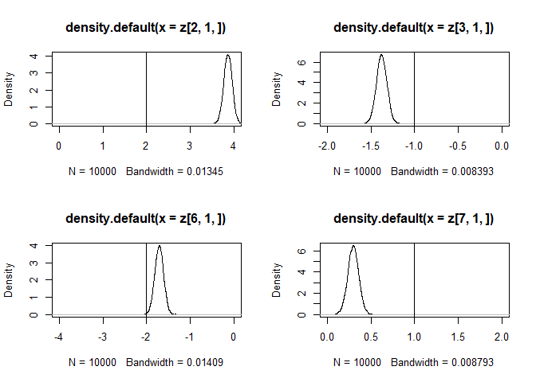
\(\hat\beta(2sls) = [X^{'}Z(Z^{'}Z)^{-1}Z^{'}X]^{-1}\)
SIV = solve(t(X)%*%Z%*%solve(t(Z)%*%Z)%*%t(Z)%*%X)%*%t(X)%*%Z%*%solve(t(Z)%*%Z)%*%t(Z)%*%Y
SIV## [,1]
## 5.0540920
## x1 0.6846211
## x2 -0.4035435
## x3 0.7844303
## -4.9229999
## -2.5418566
## 1.2379796
## -1.8822475sols = function(n){
# Create independent variables
z1 = rnorm(n)
z2 = rnorm(n)
# Create error
u1 = rnorm(n)
u2 = rnorm(n)
# Create endogenous variable
x1 = .5*z1 - z2 + u1 + rnorm(n)
x2 = 1.5*z1 - 2*z2 - u2 + rnorm(n)
x3 = rnorm(n)
# Create dependent variable
y1 = 5 + 2*x1 - x2 + x3 + u1*5 - u2*2
y2 = -5 - 2*x1 + x2 - 2*x3 + u2*5 - u1*1
X = rbind(cbind(1,x1,x2,x3,0,0,0,0),cbind(0,0,0,0,1,x1,x2,x3))
Z = rbind(cbind(1,x3,z1,z2,0,0,0,0),cbind(0,0,0,0,1,x3,z1,z2))
Y = matrix(c(y1,y2),ncol=1)
SIV = solve(t(X)%*%Z%*%solve(t(Z)%*%Z)%*%t(Z)%*%X)%*%t(X)%*%Z%*%solve(t(Z)%*%Z)%*%t(Z)%*%Y
SIV
}
z = replicate(10000, expr = sols(1000))
par(mfrow = c(2, 2))
plot(density(z[2, 1, ]), xlim = c(0,4))
abline(v = 2)
plot(density(z[3, 1, ]), xlim = c(-2,0))
abline(v = -1)
plot(density(z[6, 1, ]), xlim = c(-4,0))
abline(v = -2)
plot(density(z[7, 1, ]), xlim = c(0,2))
abline(v = 1)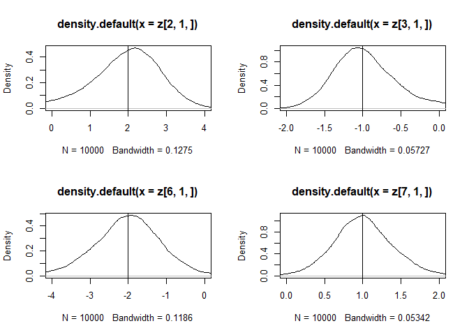
e_hat = Y - X%*%SIV
e = c(e_hat)
e = e * e
D = diag(e)
V_h = solve(t(X)%*%X)%*%(t(X)%*%D%*%X)%*%solve(t(X)%*%X)
V_h = (n/(n-8)) * V_h ## Para comparar com a estimação equação por equação usa-se k = 4
ep_h = sqrt(diag(V_h))
ep_h## x1 x2 x3
## 0.21240194 0.20748985 0.09645245 0.20761424 0.17464545 0.12252813 0.08269950
##
## 0.17908589Equção por equação
X = cbind(1,x1, x2, x3)
Y = cbind(y1,y2)
Z = cbind(1,x3, z1, z2)IV1 = solve(t(X)%*%Z%*%solve(t(Z)%*%Z)%*%t(Z)%*%X)%*%t(X)%*%Z%*%solve(t(Z)%*%Z)%*%t(Z)%*%y1
IV1## [,1]
## 5.0540920
## x1 0.6846211
## x2 -0.4035435
## x3 0.7844303IV2 = solve(t(X)%*%Z%*%solve(t(Z)%*%Z)%*%t(Z)%*%X)%*%t(X)%*%Z%*%solve(t(Z)%*%Z)%*%t(Z)%*%y2
IV2## [,1]
## -4.923000
## x1 -2.541857
## x2 1.237980
## x3 -1.882247FGLS - 3SLS
X1 = cbind(1,x1,x2,x3)
X2 = cbind(1,x1,x2,x3)
X = rbind(cbind(1,x1,x2,x3,0,0,0,0),cbind(0,0,0,0,1,x1,x2,x3))
Z = rbind(cbind(1,x3,z1,z2,0,0,0,0),cbind(0,0,0,0,1,x3,z1,z2))
Y = matrix(c(y1,y2),ncol=1)e_hat1 = y1 - X1%*%SIV[c(1,2,3,4),1]
e_hat2 = y2 - X2%*%SIV[c(5,6,7,8),1]
e_hat = cbind(e_hat1,e_hat2)sigma = t(e_hat)%*%e_hat
I = diag(n)
S1 = kronecker(solve(sigma),I) ## Cameron and Trivedi - StataBfgls1 = solve(t(X)%*%Z%*%solve(t(Z)%*%S1%*%Z)%*%t(Z)%*%X)%*%t(X)%*%Z%*%solve(t(Z)%*%S1%*%Z)%*%t(Z)%*%Y
Bfgls1## [,1]
## 5.0540920
## x1 0.6846211
## x2 -0.4035435
## x3 0.7844303
## -4.9229999
## -2.5418566
## 1.2379796
## -1.8822475S2 = kronecker(sigma,I) ## Cameron and Trivedi - Stata
V_h = solve(t(X)%*%Z%*%solve(t(Z)%*%S2%*%Z)%*%t(Z)%*%X)
V_h = (1/(n)) * V_h
ep_h = sqrt(diag(V_h))
ep_h## x1 x2 x3
## 0.2117386 1.2786112 0.5680140 0.2041734 0.1746321 1.0545390 0.4684716 0.1683928df = data.frame(y1,y2,x1,x2,x3,z1,z2)
eq1 <- y1 ~ x1 + x2 + x3
eq2 <- y2 ~ x1 + x2 + x3
system <- list (eq1 = eq1, eq2 = eq2)library(systemfit)siv1 <- systemfit(system, method = "2SLS", inst = ~ x3 + z1 + z2, data = df)
summary(siv1)##
## systemfit results
## method: 2SLS
##
## N DF SSR detRCov OLS-R2 McElroy-R2
## system 2000 1992 74944.9 1268.51 0.163336 0.03232
##
## N DF SSR MSE RMSE R2 Adj R2
## eq1 1000 996 44604.2 44.7834 6.69204 0.201494 0.199089
## eq2 1000 996 30340.6 30.4625 5.51928 0.100118 0.097408
##
## The covariance matrix of the residuals
## eq1 eq2
## eq1 44.78337 -9.78297
## eq2 -9.78297 30.46247
##
## The correlations of the residuals
## eq1 eq2
## eq1 1.000000 -0.264868
## eq2 -0.264868 1.000000
##
##
## 2SLS estimates for 'eq1' (equation 1)
## Model Formula: y1 ~ x1 + x2 + x3
## Instruments: ~x3 + z1 + z2
##
## Estimate Std. Error t value Pr(>|t|)
## (Intercept) 5.054092 0.212163 23.82170 < 2.22e-16 ***
## x1 0.684621 1.281176 0.53437 0.59320533
## x2 -0.403544 0.569153 -0.70902 0.47847547
## x3 0.784430 0.204583 3.83429 0.00013383 ***
## ---
## Signif. codes: 0 '***' 0.001 '**' 0.01 '*' 0.05 '.' 0.1 ' ' 1
##
## Residual standard error: 6.692038 on 996 degrees of freedom
## Number of observations: 1000 Degrees of Freedom: 996
## SSR: 44604.238801 MSE: 44.783372 Root MSE: 6.692038
## Multiple R-Squared: 0.201494 Adjusted R-Squared: 0.199089
##
##
## 2SLS estimates for 'eq2' (equation 2)
## Model Formula: y2 ~ x1 + x2 + x3
## Instruments: ~x3 + z1 + z2
##
## Estimate Std. Error t value Pr(>|t|)
## (Intercept) -4.923000 0.174982 -28.13425 < 2e-16 ***
## x1 -2.541857 1.056654 -2.40557 0.016329 *
## x2 1.237980 0.469411 2.63730 0.008487 **
## x3 -1.882247 0.168731 -11.15534 < 2e-16 ***
## ---
## Signif. codes: 0 '***' 0.001 '**' 0.01 '*' 0.05 '.' 0.1 ' ' 1
##
## Residual standard error: 5.519282 on 996 degrees of freedom
## Number of observations: 1000 Degrees of Freedom: 996
## SSR: 30340.622143 MSE: 30.462472 Root MSE: 5.519282
## Multiple R-Squared: 0.100118 Adjusted R-Squared: 0.097408siv <- systemfit(system, method = "3SLS", inst = ~ x3 + z1 + z2, data = df)
summary(siv)##
## systemfit results
## method: 3SLS
##
## N DF SSR detRCov OLS-R2 McElroy-R2
## system 2000 1992 74944.9 1268.51 0.163336 0.03232
##
## N DF SSR MSE RMSE R2 Adj R2
## eq1 1000 996 44604.2 44.7834 6.69204 0.201494 0.199089
## eq2 1000 996 30340.6 30.4625 5.51928 0.100118 0.097408
##
## The covariance matrix of the residuals used for estimation
## eq1 eq2
## eq1 44.78337 -9.78297
## eq2 -9.78297 30.46247
##
## The covariance matrix of the residuals
## eq1 eq2
## eq1 44.78337 -9.78297
## eq2 -9.78297 30.46247
##
## The correlations of the residuals
## eq1 eq2
## eq1 1.000000 -0.264868
## eq2 -0.264868 1.000000
##
##
## 3SLS estimates for 'eq1' (equation 1)
## Model Formula: y1 ~ x1 + x2 + x3
## Instruments: ~x3 + z1 + z2
##
## Estimate Std. Error t value Pr(>|t|)
## (Intercept) 5.054092 0.212163 23.82170 < 2.22e-16 ***
## x1 0.684621 1.281176 0.53437 0.59320533
## x2 -0.403544 0.569153 -0.70902 0.47847547
## x3 0.784430 0.204583 3.83429 0.00013383 ***
## ---
## Signif. codes: 0 '***' 0.001 '**' 0.01 '*' 0.05 '.' 0.1 ' ' 1
##
## Residual standard error: 6.692038 on 996 degrees of freedom
## Number of observations: 1000 Degrees of Freedom: 996
## SSR: 44604.238801 MSE: 44.783372 Root MSE: 6.692038
## Multiple R-Squared: 0.201494 Adjusted R-Squared: 0.199089
##
##
## 3SLS estimates for 'eq2' (equation 2)
## Model Formula: y2 ~ x1 + x2 + x3
## Instruments: ~x3 + z1 + z2
##
## Estimate Std. Error t value Pr(>|t|)
## (Intercept) -4.923000 0.174982 -28.13425 < 2e-16 ***
## x1 -2.541857 1.056654 -2.40557 0.016329 *
## x2 1.237980 0.469411 2.63730 0.008487 **
## x3 -1.882247 0.168731 -11.15534 < 2e-16 ***
## ---
## Signif. codes: 0 '***' 0.001 '**' 0.01 '*' 0.05 '.' 0.1 ' ' 1
##
## Residual standard error: 5.519282 on 996 degrees of freedom
## Number of observations: 1000 Degrees of Freedom: 996
## SSR: 30340.622143 MSE: 30.462472 Root MSE: 5.519282
## Multiple R-Squared: 0.100118 Adjusted R-Squared: 0.097408Dados em Painel com efeitos não observados
Efeitos Aleatórios
set.seed(1)
n = 500
id = seq(1:n)
T = 2
period = matrix(seq(1:T),ncol = 1)
I = matrix(rep(1,n), ncol = 1)
period = kronecker(period,I)
sigmac=10
c = rnorm(n,0,sigmac)
sigmau = 5
u1 = matrix(rnorm(n,0,sigmau),ncol=1)
u2 = matrix(rnorm(n,0,sigmau),ncol = 1)
u = rbind(u1,u2)
J = matrix(rep(1,T), ncol = 1)It = diag(T)
omega = sigmau^2*It + sigmac^2*(J%*%t(J))
omega## [,1] [,2]
## [1,] 125 100
## [2,] 100 125v = kronecker(J,c) + ux11 = matrix(rnorm(n,10,10) , ncol = 1)
x12 = 0.8*x11 + rnorm(n)
x21 = matrix(rnorm(n,5,15), ncol = 1)
x22 = 0.5*x21 + rnorm(n)
beta = c(10,5,-3)
X1 = cbind(1,x11,x21)
X2 = cbind(1,x12,x22)
y1 = X1%*%beta + c + u1
y2 = X2%*%beta + c + u2
X = rbind(X1,X2)
y = X%*%beta + kronecker(J,c) + umodelo = cbind(y,X,id,kronecker(J,c),v,u,period)
modelo= modelo[order(modelo[,5],modelo[,9],decreasing=FALSE),]
head(modelo)## id
## [1,] 162.87091 1 18.500435 -22.0822533 1 -6.264538 -5.8780225 0.3865156 1
## [2,] 109.88731 1 13.914198 -10.3020117 1 -6.264538 -0.5897127 5.6748254 2
## [3,] 29.59827 1 0.746870 -5.1706102 2 1.836433 0.3520900 -1.4843432 1
## [4,] 17.36839 1 -1.324759 -2.1986964 2 1.836433 7.3960925 5.5596592 2
## [5,] 96.70768 1 18.935812 -2.1003708 3 -8.356286 -14.2724973 -5.9162112 1
## [6,] 80.39294 1 16.768350 0.2462118 3 -8.356286 -12.7101743 -4.3538882 2bpols = solve(t(X)%*%X)%*%t(X)%*%y
bpols## [,1]
## [1,] 9.583563
## [2,] 5.069931
## [3,] -3.022429e_hat1 = y1 - X1%*%bpols
e_hat2 = y2 - X2%*%bpols
e_hat = cbind(e_hat1,e_hat2)sigma = t(e_hat)%*%e_hat
sigma/n## [,1] [,2]
## [1,] 125.05625 95.94474
## [2,] 95.94474 124.32150I = diag(n)
S = kronecker(solve(sigma),I)Bre = solve(t(X)%*%S%*%X)%*%t(X)%*%S%*%y
Bre## [,1]
## [1,] 9.598763
## [2,] 5.065440
## [3,] -3.015998V_h = solve(t(X)%*%(S)%*%X)
V_h = (1/n) * V_h
ep_h = sqrt(diag(V_h))
ep_h## [1] 0.61683692 0.04478039 0.02921716df = data.frame(y,X,v,period,id)
library(plm)##
## Attaching package: 'plm'## The following object is masked from 'package:timeSeries':
##
## lagre = plm(y ~ X2 + X3, data = df, index=c("id","period"), model = "random")
summary(re)## Oneway (individual) effect Random Effect Model
## (Swamy-Arora's transformation)
##
## Call:
## plm(formula = y ~ X2 + X3, data = df, model = "random", index = c("id",
## "period"))
##
## Balanced Panel: n = 500, T = 2, N = 1000
##
## Effects:
## var std.dev share
## idiosyncratic 28.847 5.371 0.23
## individual 96.559 9.826 0.77
## theta: 0.6395
##
## Residuals:
## Min. 1st Qu. Median 3rd Qu. Max.
## -16.71273 -3.73831 -0.18647 3.60295 19.22244
##
## Coefficients:
## Estimate Std. Error z-value Pr(>|z|)
## (Intercept) 9.596588 0.618174 15.524 < 2.2e-16 ***
## X2 5.065452 0.044813 113.035 < 2.2e-16 ***
## X3 -3.015962 0.029198 -103.294 < 2.2e-16 ***
## ---
## Signif. codes: 0 '***' 0.001 '**' 0.01 '*' 0.05 '.' 0.1 ' ' 1
##
## Total Sum of Squares: 658530
## Residual Sum of Squares: 28707
## R-Squared: 0.95641
## Adj. R-Squared: 0.95632
## Chisq: 21873.7 on 2 DF, p-value: < 2.22e-16pols = lm(y ~ X2 + X3, data = df)
summary(pols)##
## Call:
## lm(formula = y ~ X2 + X3, data = df)
##
## Residuals:
## Min 1Q Median 3Q Max
## -36.517 -7.125 -0.051 7.316 44.271
##
## Coefficients:
## Estimate Std. Error t value Pr(>|t|)
## (Intercept) 9.58356 0.48651 19.7 <2e-16 ***
## X2 5.06993 0.03627 139.8 <2e-16 ***
## X3 -3.02243 0.02888 -104.7 <2e-16 ***
## ---
## Signif. codes: 0 '***' 0.001 '**' 0.01 '*' 0.05 '.' 0.1 ' ' 1
##
## Residual standard error: 11.18 on 997 degrees of freedom
## Multiple R-squared: 0.9674, Adjusted R-squared: 0.9673
## F-statistic: 1.477e+04 on 2 and 997 DF, p-value: < 2.2e-16Simulações
re = function(n){
id = seq(1:n)
T = 2
period = matrix(seq(1:T),ncol = 1)
I = matrix(rep(1,n), ncol = 1)
period = kronecker(period,I)
sigmac=10
c = rnorm(n,0,sigmac)
sigmau = 5
u1 = matrix(rnorm(n,0,sigmau),ncol=1)
u2 = matrix(rnorm(n,0,sigmau),ncol = 1)
u = rbind(u1,u2)
J = matrix(rep(1,T), ncol = 1)
x11 = matrix(rnorm(n,10,10) , ncol = 1)
x12 = 0.8*x11 + rnorm(n)
x21 = matrix(rnorm(n,5,15), ncol = 1)
x22 = 0.5*x21 + rnorm(n)
beta = c(10,5,-3)
X1 = cbind(1,x11,x21)
X2 = cbind(1,x12,x22)
y1 = X1%*%beta + c + u1
y2 = X2%*%beta + c + u2
X = rbind(X1,X2)
y = X%*%beta + kronecker(J,c) + u
bpols = solve(t(X)%*%X)%*%t(X)%*%y
bpols
e_hat1 = y1 - X1%*%bpols
e_hat2 = y2 - X2%*%bpols
e_hat = cbind(e_hat1,e_hat2)
sigma = t(e_hat)%*%e_hat
I = diag(n)
S = kronecker(solve(sigma),I)
Bre = solve(t(X)%*%S%*%X)%*%t(X)%*%S%*%y
Bre
return(c(bpols,Bre))
}z = replicate(1000, expr = re(100))
par(mfrow = c(2, 2))
plot(density(z[2, ]), xlim = c(4,6))
abline(v = 5)
plot(density(z[3, ]), xlim = c(-4,-2))
abline(v = -3)
plot(density(z[5, ]), xlim = c(4,6))
abline(v = 5)
plot(density(z[6, ]), xlim = c(-4,-2))
abline(v = -3)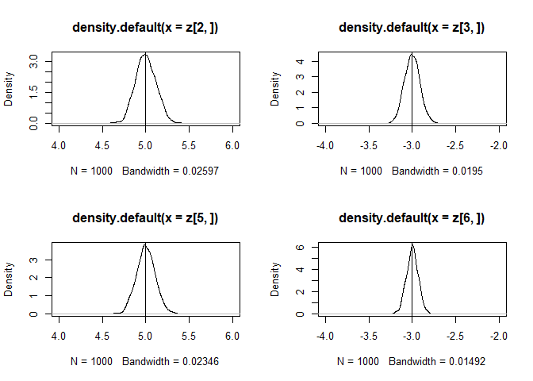
Efeitos Fixos
set.seed(1)
n = 500
id = seq(1:n)
T = 2
period = matrix(seq(1:T),ncol = 1)
I = matrix(rep(1,n), ncol = 1)
period = kronecker(period,I)
sigmac=10
c = rnorm(n,0,sigmac)
sigmau = 5
u1 = matrix(rnorm(n,0,sigmau),ncol=1)
u2 = matrix(rnorm(n,0,sigmau),ncol = 1)
u = rbind(u1,u2)
#u = rnorm(n*T,0,sigmau)
J = matrix(rep(1,T), ncol = 1)
#c = kronecker(J,c)
It = diag(T)
omega = sigmau^2*It + sigmac^2*(J%*%t(J))
omega## [,1] [,2]
## [1,] 125 100
## [2,] 100 125#ee = e%*%t(e)
#ee[c(seq(1:10)),c(seq(1:10))]/n
#uu = u%*%t(u)
#uu[c(seq(1:10)),c(seq(1:10))]
v = c + u
x11 = matrix(rnorm(n,10,10) , ncol = 1)
x12 = 0.8*x11 + rnorm(n)
x21 = matrix(rnorm(n,5,15) + 0.7*c, ncol = 1)
x22 = 0.5*x21+ 1.5*c + rnorm(n)
beta = c(10,5,-3)
X1 = cbind(1,x11,x21)
X2 = cbind(1,x12,x22)
y1 = X1%*%beta + 10*c + u1
y2 = X2%*%beta + 12*c + u2
X = rbind(X1,X2)modelo = cbind(X,id,kronecker(J,c),v,u,period)
modelo= modelo[order(modelo[,4],modelo[,8],decreasing=FALSE),]
head(modelo)## id
## [1,] 1 18.500435 -26.467430 1 -6.264538 -5.8780225 0.3865156 1
## [2,] 1 13.914198 -21.891407 1 -6.264538 -0.5897127 5.6748254 2
## [3,] 1 0.746870 -3.885107 2 1.836433 0.3520900 -1.4843432 1
## [4,] 1 -1.324759 1.198705 2 1.836433 7.3960925 5.5596592 2
## [5,] 1 18.935812 -7.949771 3 -8.356286 -14.2724973 -5.9162112 1
## [6,] 1 16.768350 -15.212918 3 -8.356286 -12.7101743 -4.3538882 2X = modelo[,c(1,2,3)]
y = X%*%beta + kronecker(c,J) + upols = solve(t(X)%*%X)%*%t(X)%*%X
pols##
## 1.000000e+00 -1.098340e-14 2.623596e-14
## -2.469948e-17 1.000000e+00 -1.474407e-15
## 2.587177e-17 -1.961864e-16 1.000000e+00#install.packages("simex")
library(simex)## Warning: package 'simex' was built under R version 4.0.5X = modelo[,c(2,3)]
I = diag(n*T)
D = diag.block(J,n)
M = I - (D%*%solve(t(D)%*%D)%*%t(D))
x_til = M%*%X
y_til = M%*%y fe = solve(t(x_til)%*%x_til)%*%t(x_til)%*%y_til
fe## [,1]
## 5.015333
## -2.995034e_hat = y_til - x_til%*%fe
sigma_hat = (1/(n*(T-1)-2)) * t(e_hat)%*%e_hat # n-k correção de viés
sigma_hat## [,1]
## [1,] 25.04948V = sigma_hat[1,1] * solve(t(x_til)%*%x_til)
V##
## 0.0107123404 -0.0001796613
## -0.0001796613 0.0004792666ep = sqrt(diag(V))
ep##
## 0.10350044 0.02189216df = data.frame(y,modelo)
library(plm)
fe = plm(y ~ V2 + V3, data = df, index=c("id","V8"), model = "within")
summary(fe)## Oneway (individual) effect Within Model
##
## Call:
## plm(formula = y ~ V2 + V3, data = df, model = "within", index = c("id",
## "V8"))
##
## Balanced Panel: n = 500, T = 2, N = 1000
##
## Residuals:
## Min. 1st Qu. Median 3rd Qu. Max.
## -1.1917e+01 -2.4427e+00 4.4409e-16 2.4427e+00 1.1917e+01
##
## Coefficients:
## Estimate Std. Error t-value Pr(>|t|)
## V2 5.015333 0.103500 48.457 < 2.2e-16 ***
## V3 -2.995034 0.021892 -136.809 < 2.2e-16 ***
## ---
## Signif. codes: 0 '***' 0.001 '**' 0.01 '*' 0.05 '.' 0.1 ' ' 1
##
## Total Sum of Squares: 516970
## Residual Sum of Squares: 12475
## R-Squared: 0.97587
## Adj. R-Squared: 0.95159
## F-statistic: 10070 on 2 and 498 DF, p-value: < 2.22e-16Simulações
fe = function(n){
id = seq(1:n)
T = 2
period = matrix(seq(1:T),ncol = 1)
I = matrix(rep(1,n), ncol = 1)
period = kronecker(period,I)
sigmac=10
c = rnorm(n,0,sigmac)
sigmau = 5
u1 = matrix(rnorm(n,0,sigmau),ncol=1)
u2 = matrix(rnorm(n,0,sigmau),ncol = 1)
u = rbind(u1,u2)
#u = rnorm(n*T,0,sigmau)
J = matrix(rep(1,T), ncol = 1)
#c = kronecker(J,c)
It = diag(T)
omega = sigmau^2*It + sigmac^2*(J%*%t(J))
omega
#ee = e%*%t(e)
#ee[c(seq(1:10)),c(seq(1:10))]/n
#uu = u%*%t(u)
#uu[c(seq(1:10)),c(seq(1:10))]
v = c + u
x11 = matrix(rnorm(n,10,10) , ncol = 1)
x12 = 0.8*x11 + rnorm(n)
x21 = matrix(rnorm(n,5,15) + 0.7*c, ncol = 1)
x22 = 0.5*x21+ 1.5*c + rnorm(n)
beta = c(10,5,-3)
X1 = cbind(1,x11,x21)
X2 = cbind(1,x12,x22)
y1 = X1%*%beta + 10*c + u1
y2 = X2%*%beta + 12*c + u2
X = rbind(X1,X2)
#X = cbind(1,X)
modelo = cbind(X,id,kronecker(J,c),v,u,period)
modelo= modelo[order(modelo[,4],modelo[,8],decreasing=FALSE),]
head(modelo)
X = modelo[,c(1,2,3)]
#X = X[,c(1,2,3)]
y = X%*%beta + kronecker(c,J) + u
bpols = solve(t(X)%*%X)%*%t(X)%*%y
bpols
X = modelo[,c(2,3)]
I = diag(n*T)
D = diag.block(J,n)
M = I - (D%*%solve(t(D)%*%D)%*%t(D))
x_til = M%*%X
y_til = M%*%y
bfe = solve(t(x_til)%*%x_til)%*%t(x_til)%*%y_til
bfe
return(c(bpols,bfe))
}z = replicate(1000, expr = fe(100))
par(mfrow = c(2, 2))
plot(density(z[2, ]), xlim = c(4,6))
abline(v = 5)
plot(density(z[3, ]), xlim = c(-4,-2))
abline(v = -3)
plot(density(z[4, ]), xlim = c(4,6))
abline(v = 5)
plot(density(z[5, ]), xlim = c(-4,-2))
abline(v = -3)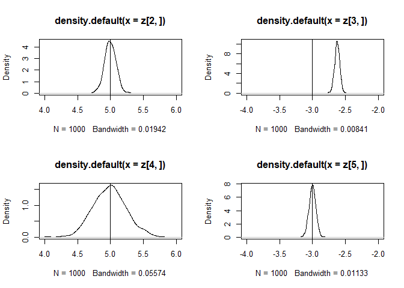